Chapter 1: Introduction
This series is work in progress!
So you want to learn stenography! It's a very long road ahead, but I do hope this series will help guide you along the way. Thanks to Plover and the efforts from the Open Steno Project, stenography is no longer restricted to professionals and students. The hobbyist steno community is flourishing, and self-taught professional stenographers are becoming more and more common.
How does steno work?
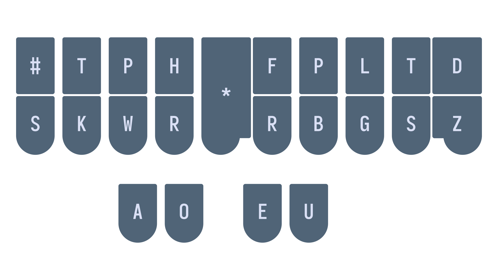
Stenography (steno for short) is a method of text input that utilizes a chorded keyboard layout to write parts of words, entire words, or even phrases. Before delving into the details of how steno works, first think about regular keyboards—for example, how one would type the word "complicate":

Every letter is simply pressed individually:
c/o/m/p/l/i/c/a/t/e
The slashes represent separators between key presses.
This results in 10 successive key strokes. On the other hand, steno uses chords, or groups of keys that are pressed down all at once. This action of pressing down multiple keys simultaneously is called a stroke. By using chords the word "complicate" can be written using only three strokes:
com/pli/cate
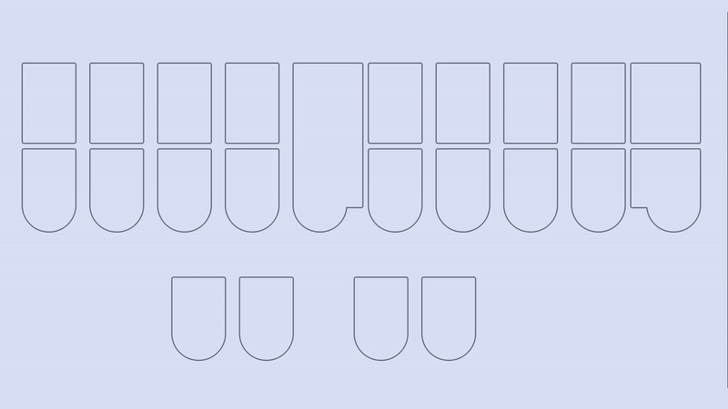
We could notate writing this word using steno like so:
KOPL/PHREU/KAEUT
Why KOPL/PHREU/KAEUT?
At first glance, it appears that KOPL/PHREU/KAEUT has no bearing resemblance to the word it represents. The reason for this is that there are only so many keys on the steno layout. Arbitrary letter combinations have to be used in order to represent the sounds that are not represented by single keys.
In our example, PL in KOPL represents the ending "m" consonant; HR in PHREU represents the initial "l" consonant; EU in PHREU represents the "i" vowel, as in "pit"; finally AEU in KAEUT represents the /eɪ/ diphthong (also called "long a" vowel) as in "fate".
The following table illustrates the sounds that each key group represents in our example.
| Steno Keys | K | O | PL | P | HR | EU | K | AEU | T | ||
| Sounds | c | o | m | p | l | i | c | ā | t |
Essentially, KOPL/PHREU/KAEUT really just represents KOM/PLI/KĀT (where Ā represents the "long a" or /eɪ/ diphthong).
And that's basically all there is in principle! Stenographers memorize a whole slew of chords for the missing sounds, and string multiple strokes together to write English.
"Raw steno" terminology
Before we continue, it's important to be aware of some of the terminology surrounding key presses in steno.
-
Chord: a group of keys pressed all at once representing a single sound.
-
Stroke: a group of keys pressed all at once representing a syllable.
-
Outline: a group of one or more strokes that is mapped to a translation.
The terms "stroke" and "chord" are almost synonymous, but there is a subtle distinction between the two. Generally, "stroke" refers to a group of keys that make a complete sound: one that contains at least one vowel and one consonant. On the other hand, "chord" refers to a group of keys that make a single sound—like one consonant or one vowel.
So, KOPL/PHREU/KAEUT would be considered an outline for the word "complicate". It is made up of 3 strokes, one of which is KOPL. Within this stroke, there is the PL chord that represents the ending "m" consonant. Here is an excellent graphic from Jen's steno explainers:
{kind=link}

Don't worry too much about the terminology right now, but it will become important later on.
Steno is primarily phonetic
Notice how so far sounds have been emphasized rather than spellings of words. In our example, "complicate" is not spelled with a "k" and yet it still uses the K key in the first stroke. The reason for this is that English spelling is quite complicated, but its phonetics are comparatively simple. Steno takes advantage of this by being a primarily phonetic system. In general, words are written based on their pronunciation. The K key represents all "k" sounds, regardless of spelling.
However, if steno were completely phonetic, it would be impossible to differentiate between "gait" and "gate", or "site", "cite", and "sight", or any of the other numerous homophones that English has. For some words, we do have to take spelling into consideration. How exactly this is done is dictated by the rules found in a steno theory.
Steno theories
A steno theory refers to the set of rules that govern how you write words. While the basics (such as everything I've mentioned so far) are more or less the same between theories, there are some subtle differences. If you're starting to learn English steno, it's not too important which theory you start with—it isn't difficult to switch between them.
The primary way steno theories differ is in their philosophy. For example, Phoenix theory is based off of a comprehensive set of rules that you must be fluent with; the benefit is that you will be able to write any word that comes to mind regardless of if you have written it before. On the other side of the spectrum, Magnum theory places more emphasis on learning words themselves through rote memorization. In essence, you learn fewer rules, but you must memorize more words and exceptions.
Most steno theories (like the previously mentioned ones) are not free and require you to purchase textbooks along with their dictionaries. The only free theories (as of this writing) are Lapwing theory, Plover theory, and Platinum theory.
Unfortunately, most steno theories are also quite specific to one accent. In particular, all of the theories mentioned so far are all based on a General North American accent. It may be difficult to learn one of these theories if you speak a different variant of English; however, it is not impossible if you are comfortable with subvocalizing with an American accent.
There has been one effort in the Open Steno community to create a theory based for non-rhotic accents (i.e., British English), but I cannot recommend it as the dictionary is not very complete.
How steno works from the software side
I've been explaining how steno works in principle, but you might also be wondering how the keyboard "knows" what to output with any given steno outline. Translation occurs in a steno engine that is either a program on a computer, or in a keyboard's firmware. They use large files called dictionaries that simply contain 1-to-1 translations between steno outlines and their output. This makes steno entirely deterministic and predictable.
For example, here is one section from Lapwing theory dictionary:
"TKUR/KWRABLT": "durability",
"TKUR/KWRES": "duress",
"TKUR/KWRUPL": "durum",
"TKUR/PWHREU": "durably",
"TKUR/AEUGS": "duration",
"TKUR/-BL": "durable",
"TKUR/-BLT": "durability",
"TKURPB": "durn",
"TKURBL": "durable",
Many steno dictionaries have upwards of hundreds of thousands of entries. It's important to remember that the majority of these are predictable as they follow the rules governed in a steno theory. Stenographers don't simply just memorize every single entry in their dictionary—that would be insane!
This, however, does bring up the concern of what to do when a word is not defined in a a stenographer's dictionary. In these cases, there is a technique for letter-by-letter input (called fingerspelling). This technique is rather slow (~40 WPM), but it is not a common occurrence. Furthermore, a good stenographer is expected to add any outlines they find missing according to their theory rules. There is no such thing as a word that is difficult to represent in steno strokes. A good theory will provide a set of rules that makes it very easy to break down a complicated word into simple steno strokes.
Another important feature of steno (due in part to its usage of dictionaries) are abbreviated entries, or "briefs". These are outlines that do not 100% follow basic theory rules. They contain fewer strokes and, as a result, are faster to write. This helps for building speed and are often used for the most common words in English.
Non-word translations
Steno's usage of dictionaries also allows for non-word translations such as symbols, keyboard shortcuts, arrow keys, commands, and so on. It is a myth that steno can only be used to write English text; there are many systems that easily mesh with English steno theories that can allow you to write anything that a regular keyboard can. These systems do not use the phonetics of English steno theories, but rather shapes and chords that are simple and easy to remember. If you've memorized the locations of keys on a QWERTY keyboard (even just a few), you've easily got the mental flexibility to use steno for non-word translations.
Some hobbyists can even use steno for coding and steno with vim! Of course, that's not to say that everyone should use steno for these purposes, but it is certainly possible and some people prefer it over using a regular keyboard. This series will focus on writing English prose, but in later chapters I will discuss tools that allow you to use steno for editing text, controlling your computer, and even a little coding!
Conclusion
I hope this has helped to demystify stenography! In the next chapter, I will be discussing steno hardware and software to get you started on learning steno!
Chapter 2: Steno hardware and software
Steno is unlike alternative keyboard layouts that can easily be switched in your operating system's settings. Steno requires specialized hardware and a steno engine that translates the keys you press into the words to be outputted. This chapter will go over both steno keyboards (hardware) and the software required.
Steno hardware
I would highly recommend purchasing a steno keyboard before starting to learn steno. Any of the ones listed on the supported hardware wiki page are really good; they will work for many years as you get faster.
$100 is a little steep for a simple keyboard, but that is unfortunately the price point for custom keyboards which don't see much demand.
There are two reasons why specialized keyboards are needed for steno. First of all, regular keyboards have row stagger which makes it really hard to vertically press two keys at once with the same finger. Second of all, most keyboards lack n-key rollover: the ability to detect multiple simultaneous key presses. Generally, you'll find keyboards are only able to detect two to six key presses at once.

That being said, the first steno board I ever used was an NKRO keyboard that I bought second hand for $30. It came with loud and heavy 60 gram switches. As you'll often be pressing around 6 keys per stroke, you want to have very light keys. With this cheap keyboard, I could only steno for about a minute before my wrists started burning. For comparison, professional steno machines have tension mechanisms that bottom out at as low as 10 grams regardless of how many keys are pressed.
If you do choose to use a regular keyboard for learning steno, make sure you know where the correct key positions are. I'd recommend printing out or keeping a graphic like this handy:

If possible, I would also recommend flipping the top row of keycaps to bring the top row a little closer to the bottom row. This helps a lot with pressing two keys vertically:

It is definitely possible to learn theory with a regular keyboard (even one that doesn't support n-key rollover), but it might be frustrating depending on your patience.
Steno software
This series requires you to use Plover; a free and open source steno engine available on Linux, macOS, and Windows. Follow the instructions in the Plover wiki (link below) to set up the app and your machine. If you are using a QWERTY keyboard, make sure to read over the page and the relevant sections.
Beginner's Guide to Plover
Chapter 3: How to learn steno
Steno is difficult
Before starting to learn steno, it is important to know that it is not something that can be easily picked up within a week. Personally, it took me about 3 months to achieve a consistent 30 WPM speed. While not nearly as difficult as learning a new language, the difficulty is definitely comparable to something like learning a musical instrument—I definitely agree with this as an individual who has learned several instruments in the past. Learning steno takes a lot of (good) practice and patience. You should not be expecting to double your typing speed in just a month.
In fact, it took me 6 months to reach 150 WPM on some TypeRacer quotes, but my speed varied quite a lot as novel and unfamiliar words would throw me off. While my top speed was indeed quite fast during this period, my average speed of 90 WPM wasn't significantly faster than a good QWERTY typist. Another 6 months later, I was at a consistent 180 WPM on most Monkeytype quotes. Another year and a half after that, I completely switched to steno for all computer tasks.
I hope reading this has not discouraged you from picking up steno, but I do have to honest and straightforward about it. If you are not discouraged, however, I do believe you have the right mindset to succeed!
Take steno as a challenge!
When I first started learning stenography, I knew that people were saying it is very difficult to learn. Instead of being discouraged by this, it motivated me even more. In the back of my mind, I wanted to prove that steno wasn't that difficult and that maybe I could learn it faster than most people. While this is quite egotistical, I do think this mindset helped me along the way; even though I did not learn steno as fast as I had hoped.
If you're not feeling this way, but still want to learn, try to convince yourself that you can do this! Compared to other skills or technical abilities, steno is something that I truly believe anyone can do. You don't have to necessarily have quick fingers, and you don't have to have an exceptional memory. In my opinion, all you need is a lot of free time, some patience, and a good steno board.
I should also mention that if, at any point in your steno journey, you are feeling discouraged at your progress, don't give up! Most people take 6 months to a year to reach their old typing speed. It is a gradual process, and one that you should be finding fun.
Believe in yourself! Face learning steno as a challenge!
How do I learn?
Lapwing chapters
This series is aimed at being a complete guide to learning steno. While you will learn everything that you need to know to be fast at steno, practice and fluency is key.
Each chapter in this series follows the same basic format: new theory and practice material introduced in subsections followed by a chapter test. The purpose of this test is to ensure that you have learned the material well enough. It is crucial that you are comfortable and well acquainted with each chapter before moving onto the next.
Everyone's threshold of being "comfortable" differs and it is up to you to decide what this means for you. However, if you are unsure, the "recommended completion goal" is a good starting point.
As this series is very new, I have not been given any feedback. As such, it may be possible that the recommended completion goal is entirely unrealistic for each chapter. Please take it with a grain of salt!
Chapter test recommendations
These are only recommendations if you have no idea where to start! It may very well be the case that you start off following some of these recommendations, and find out later on that they do not work for you.
- Before you attempt each chapter test, complete as much practice material as you can
- Space your chapter test attempt at least 2 hours after any previous practice
- This ensures you are not simply testing your short-term memory
- If you don't meet your completion goal, self-reflect on whether this was due to a one-time careless mistake or not enough practice
- If the former is the case, you may be ready to proceed to the next chapter
- If the latter is the case, take a break and come back to the chapter another time!
Incorporating steno into your computer usage
It's always a good idea to apply your learning rather than just completing exercises in a textbook. However, I would recommend only incorporating steno into your computer usage once you have reached chapter 18. Before this, there will be many instances where you will not be able to figure out how to write certain words. This will encourage usage of the lookup tool.
While not bad in and of itself, you have to learn how to use it properly. If you are lacking knowledge in theory, you may not understand how the outlines correlate with the word you are looking up. This may lead to frustration and confusion about core aspects of Lapwing theory. Also, you may be tempted to learn the shortest outline available; these outlines likely do not follow basic theory and instead use more advanced briefing techniques that you should be learning right from the start.
The lookup tool
If you still would like to incorporate steno into your daily computer usage early on, here are a few tips to help you use the lookup tool effectively.
Use the longest outline available
Lapwing is full of briefs and write-outs. A brief is an abbreviated outline that is used for speed. It may not follow theory at all and can be completely arbitrary. On the other hand, write-outs are outlines that are logical and follow theory 100%. If you have never seen a word before, you would use a write-out since your theory provides you with a set of rules that you can use to break it into a steno outline.
Due to the nature of briefs and write-outs, briefs tend to use fewer strokes and write-outs tend to use more. When you type in a word into the lookup tool, both briefs and write-out entries will be present. I recommend using the longest outline in the lookup tool as that is overwhelmingly likely to be a write-out.
In the following example, the first two entries are briefs, while the last two are write-outs. You should be using one of these two. Defaulting to the longest outline available is very safe.

Be careful of hidden affixes
The Lapwing dictionary may not contain every single valid outline. You will later learn of affix strokes which attach to root words. For example, the word "thoroughly" contains "thorough" as a road word and "-ly" as a suffix. One way to write "thoroughly" is THOR/KWROE/HREU. However, it does not show up in the dictionary:

Instead, remove the "-ly" suffix and look up the word "thorough". You will find THOR/KWROE as a valid outline:

To write the "-ly", you could look this up too:

The curly braces indicate that this word is special. In this case, the caret indicates that it will attach on that side. Putting these two outlines together, you would get THOR/KWROE/HREU. This is the canonical way you would write the word "thoroughly" even though it is not in the dictionary.
Cold turkey?
In this context, going "cold turkey" with steno refers to throwing out your regular keyboard and switching to steno right away no matter how slow you are.
I would not recommend this at all
Going cold turkey might make sense if you're learning a new keyboard layout where you just have to learn the new key positions, but it doesn't work for steno. There are elements of theory that can only be learned from reading a book such as this one.
Ultimately, if you go cold turkey, you will find yourself looking up words very frequently. As a result, you will only be learning words by memorizing their outlines. While it is possible to deduce theory from these look ups, you will likely be frustrated and confused when it comes to less intuitive theory principles.
Instead, treat learning steno like a hobby on the side. Your ultimate goal may be to replace your regular keyboard with steno, but you need to at least be familiar with basic theory before doing so. Rushing will not get you anywhere in learning steno.
Chapter 4: The layout
Recommended pace
Recommended time to spend on this chapter: 5–9 days
- Read this page (10 minutes)
- Drill as much as possible over the course of several days (1–3 hours)
- Attempt the test (20 minutes)
- Keep practising the test until you meet the requirements (1 hour)
Useful links
Finger positions
You may remember this graphic from chapter 2:
Keep this bookmarked and handy throughout this chapter! The yellow circles indicate the resting "home position" of your fingers.
You want to memorize this layout to the point that you are able to press the right key when prompted for.
The best way to go about memorizing this layout is splitting it into memorable chunks and doing a lot of drills. It's one thing to know which finger is responsible for which key(s), but the most effective way of building muscle memory for the layout is simply drilling it.
The backspace key
From here on, you can play around with the keys and press random things to see what you get for fun. You could also jump right into the drills. In any case, it's very important to know how to backspace what Plover outputs. For this, press the asterisk key (*) and Plover will delete the last translation caused by the last stroke.
What's important to note is that doing so does not delete the last word necessarily. Try this: press the stroke PAOEU into a text editor. You should see the word "pie" outputted by Plover. Now, press the stroke THOPB. You should now see that Plover backspaces the "ie" and replaces it with "ython" to give you the word "python".
What you've just done is write a multistroke outline for the word "python"; to delete this, you will need to press the asterisk key twice. Try it out!
If you're having trouble pressing the strokes, you can also just watch this GIF:

Notice how pressing the asterisk once doesn't delete the word—it only deletes the last stroke and therefore leaves the PAOEU (pie) stroke alone.
For now, this isn't very crucial as the majority of the words you will be writing contain only single syllables. However, do keep in mind that the asterisk does not behave like a backspace key in the traditional sense.
Steno Jig
For learning the layout, Steno Jig has some helpful "Learn the Steno Keyboard" drills.
For each drill, you may choose to enable hints, which show where each key is located on the steno layout. Ultimately, you want to be able to do these drills without using any hints. Do not worry about the "Speed (strokes per minute)" parameter just yet.
If you are unsure where to start, these 5 drills are recommended (select them in the dropdown menu):
- Left hand, bottom row
- Right hand, full bottom row
- Left hand, top row
- Right hand, full top row
- Vowels
In order to do the drills, you must disable all your dictionaries by unchecking them in Plover's main window:

Click on the checkmarks next to each dictionary to disable them.
After you've done this, Plover will output raw steno when you write a key. Simply press the key that is prompted during the drills. If you make a mistake, press the asterisk key to backspace.
Why does Plover output a hyphen?
With your dictionaries unchecked, try pressing the right side "T" key (or really any nonvowel on the right side). You'll notice that Plover outputs -T with a hyphen. The hyphen indicates that this "T" is on the right side of the keyboard. If you are prompted to press S, you must press the "S" key on the left side. If you see -S, this indicates that the S is on the right side and so you must press the right side "S" key.
This hyphen is included in all strokes that contain only right hand keys. If you were to press the right hand "R", "P", and "L" keys, Plover would output -RPL. If a stroke contains a vowel or the asterisk, however, the hyphen is omitted.
How should I start?
If you'd like, you can just jump right into the drills; that is a valid way to learn the layout. However, I would suggest coming up with mnemonics first just to make the memorization process a little bit easier. These should be personal as they're more likely to stick.
For example, these are some mnemonics I used when first starting off:
-
Left hand, bottom row (
SKWR)- some kettle valley railway (
SKWR)- A historical railway in my area ("v" is not quite "W", but it was close enough)
- some kettle valley railway (
-
Right hand, full bottom row (
-RBGSZ)- red, blue, green (
RBG)- Like "RGB" but not quite
- Bottom right pinkie key is
-Sjust like bottom left pinkie - The "Z" sound is similar to "S" and is immediately to the right of
-S -Zis also on the end, just like in the alphabet
- red, blue, green (
-
Left hand, top row (
#TPH)- hash is right above
S - the power of hydrogen ("TPH")
- As in the chemistry term "pH"
- hash is right above
-
Right hand, full top row (
-FPLTD)- Index finger presses
-F - personal learning time (
-PLT)- You can also combine the previous key with this mnemonic where
-Frepresents an expletive (-FPLTD)
- You can also combine the previous key with this mnemonic where
- The "D" sound is just the voiced "T" sound and is right next to
-T(-D)
- Index finger presses
-
Vowels (
AOEU)- ay yo, eu! (
AOEU)- An individual really passionate about the European Union
- You could also pronounce "ao" as "ow" for someone who dislikes the European Union
- ay yo, eu! (
Clearly some of these mnemonics are rather silly (and also very specific), but that makes them easier to remember for me. I do encourage you to come up with your own! At some point, the keys will become natural to you and you will not need to recall any mnemonics. It is at this point that you should proceed to the test.
Other drills
If, after a few days, you feel pretty comfortable practising the previous drills, you may want to try other practice material. The other Steno Jig drills are fair game:

The drills outside of the red box incorporate theory you have not learned yet, and are not recommended.
If you have already done these drills and are quite comfortable, I would recommend moving onto the test.
Chapter 4 test
For this test, we will also be using Steno Jig. This time, we will be making a custom drill here:

Click here to take you to the page shown above.
Copy and paste the following into the text box:
SAF SAR SAP SAB SAL SAG SAT SAS SAD SAZ SOF SOR SOP SOB SOL SOG SOT SOS SOD SOZ SEF SER SEP SEB SEL SEG SET SES SED SEZ SUF SUR SUP SUB SUL SUG SUT SUS SUD SUZ TAF TAR TAP TAB TAL TAG TAT TAS TAD TAZ TOF TOR TOP TOB TOL TOG TOT TOS TOD TOZ TEF TER TEP TEB TEL TEG TET TES TED TEZ TUF TUR TUP TUB TUL TUG TUT TUS TUD TUZ KAF KAR KAP KAB KAL KAG KAT KAS KAD KAZ KOF KOR KOP KOB KOL KOG KOT KOS KOD KOZ KEF KER KEP KEB KEL KEG KET KES KED KEZ KUF KUR KUP KUB KUL KUG KUT KUS KUD KUZ PAF PAR PAP PAB PAL PAG PAT PAS PAD PAZ POF POR POP POB POL POG POT POS POD POZ PEF PER PEP PEB PEL PEG PET PES PED PEZ PUF PUR PUP PUB PUL PUG PUT PUS PUD PUZ WAF WAR WAP WAB WAL WAG WAT WAS WAD WAZ WOF WOR WOP WOB WOL WOG WOT WOS WOD WOZ WEF WER WEP WEB WEL WEG WET WES WED WEZ WUF WUR WUP WUB WUL WUG WUT WUS WUD WUZ HAF HAR HAP HAB HAL HAG HAT HAS HAD HAZ HOF HOR HOP HOB HOL HOG HOT HOS HOD HOZ HEF HER HEP HEB HEL HEG HET HES HED HEZ HUF HUR HUP HUB HUL HUG HUT HUS HUD HUZ RAF RAR RAP RAB RAL RAG RAT RAS RAD RAZ ROF ROR ROP ROB ROL ROG ROT ROS ROD ROZ REF RER REP REB REL REG RET RES RED REZ RUF RUR RUP RUB RUL RUG RUT RUS RUD RUZ
This test is a little different to previous drills in that you are writing entire strokes rather than single keys. Consonants on the left side of a vowel should be pressed with the left hand, and consonants on the right side should be pressed with the right hand. So SAP would be written like:

It is important that you press all three keys all at once for every stroke you are prompted to write (do not press each key letter by letter).
Select "Shuffle words" and make sure your dictionaries are also unchecked just like in previous drills. Once you have done so, you are ready to go!
Recommended completion goal
This is only a suggestion; it is not a requirement to move to the next chapter!
You should be able to complete this test in 15 minutes or fewer with an accuracy of at least 90%.
This bar for completion is quite high, relatively speaking. However, do keep in mind that spending a week or more on the layout is recommended! It is very important that you internalize the layout as much as possible.
You are encouraged to use this test material as practice!
Chapter 5: Lapwing setup and basics
Recommended pace
Recommended time to spend on this chapter: 2–5 days.
- Set up Lapwing (5 minutes)
- Familiarize yourself with Typey Type (5 minutes)
- Play around with various settings if you'd like
- Read Basic phonetics—single syllable words and complete the drill (20 minutes)
- Repeat the drill as needed.
- Read The missing short vowel and complete the drill (15 minutes)
- Repeat the drill as needed
- Read Left hand d, b, and l and complete the drill (20 minutes)
- Attempt the test (20 minutes)
- Practise as needed
Remember to take breaks!
Useful links
- Typey Type custom lessons
- Basic single syllable words drill
- Basic left hand single syllable words drill
- Single syllable words with
EUdrill - Single syllable dbl words drill
- Chapter 5 test
Lapwing setup
So far, we have just been using Plover without any modifications. As this series is about learning Lapwing theory, it's important that we set up Plover correctly. There are two options: you can install the plover-lapwing-aio plugin or you can add the Lapwing dictionaries manually. If you are a beginner, use the all-in-one plugin discussed below.
Using the all-in-one plugin
In Plover's main window, click on Tools → Plugins Manager. Scroll down until you see plover-lapwing-aio and select it. Press Install/Update and make sure to press the Restart button afterwards.

NOTE: just closing the main window is not sufficient to restart Plover. You will have to press the restart button or manually quit Plover by going to
File → Quit Ploverand opening Plover again.
Once Plover has been restarted, in Plover's main window, click on Configure → System and change the system to Lapwing. Press Apply and OK—you should now be good to go!

If you'd like to know more about the default dictionaries that come with the all-in-one plugin, have a look at the homepage.
Setting up Lapwing manually
If you do not want to use the all-in-one plugin, please see Appendix B if you wish to set up Lapwing dictionaries manually (not recommended).
Typey Type
We will now use Typey Type for drilling. The benefit of Typey Type is that you can upload custom lessons with their own custom outlines.

Click here to access Typey Type shown above
Lessons in this series will be provided as links to text files. Left clicking on these links will display the contents of each lesson. Copy and paste the entire file (Ctrl + A or Cmd + A to select the whole page) into the text box above. After that, press "Start custom lesson".
Make sure to sort the words randomly on the right hand side.

You may tweak additional settings to your liking, but the defaults are perfectly fine.
If you would like to try this out, here is one example of a lesson:
Click here to access a sample lesson
Basic phonetics—single syllable words
In the previous chapter's test, you had to write all the different combinations of strokes that involve a left hand consonant, a vowel, and a right hand consonant. You may have noticed that some of these strokes actually resemble words like POT, TAP, and HUT. In Lapwing theory, this is exactly how you would write the words "pot", "tap", and "hut", respectively.
The reason for this is:
Every key represents the sound it is labelled with (unless it is part of a chord).
This means that the
PinPOTrepresents the "p" sound. However, thePinTPAUTdoes not represent the "p" sound since it is part of theTPchord. Do not worry about identifying chords for now.
Thus, here are some examples of some basic words you can write just by knowing the layout:
- cat
KAT - rub
RUB - purr
PUR - rough
RUF
Those last two words may have been a little bit tricky as they are spelled using multiple vowel letters. Here are some rules for dealing with short vowels:
-
If a word is spelled using a single vowel, simply use the vowel key that spells the word.
-
If a word is spelled using multiple vowel letters that (together) are pronounced as a single short vowel, use the vowel key that corresponds to the sound.
Different vowels with -R?
The words "purr" and "rub" have phonetically different vowels and yet still use the same vowel keys.
This is not limited to the U vowel; for example, we see this in:
ARas in "car"ORas in "tore"ERas in "per"URas in "purr"
Remember that with short vowels, we care more about their spelling and not so much about how they are pronounced (rule 1 above). We essentially treat the -R as a consonant even though its inclusion with a vowel key subtly changes the sound.
Section practice material
Basic single syllable words drill
Steno order
Looking at the steno layout, why is it that you must write the word "car" using the left K, and the right hand -R?
The answer is steno order.

Sounds you make on the layout are supposed to follow this order.
#STKPWHRAO*EUFRPBLGTSDZ
Therefore, the only correct way to write the word "car" would be KAR.
#STKPWHRAO*EUFRPBLGTSDZ
The following is not how you write KAR; it is actually KRA:

While you don't have to memorize steno order explicitly, you should be able to break sounds into steno strokes that follow steno order. This may sound difficult, but with time and practice this will come quite naturally.
Impossible single syllable words
Here are some examples of single syllable words that you cannot write in one stroke as the sounds do not fall in steno order.
- trust
- Closest would be
TRUTS - #STKPWHRAO*EUPBLGTSDZ
- Closest would be
- turf
- Closest would be
TUFR - #STKPWHRAO*EUFRPBLGTSDZ
- Closest would be
Try to convince yourself that you cannot write these words in one stroke, despite the fact that all the sounds can be found on the layout. Do not worry about how to actually write these words right now—you will later learn theory that covers these situations.
Combining single left hand keys
Before even learning some of the more complicated chords, there are some sounds on the left hand that can be combined together quite intuitively.
STas in "stop"SKas in "scar"SPas in "spot"SHas in "shop"THas in "thug"TRas in "trap"KHas in "chug"KRas in "crop"PRas in "prat"
KHfor "ch" might not be immediately obvious, but just remember thatKis used for the "hard c" sound. Thus, if you accept thatKcan represent the letter "c", then combining it with theHkey makes some sense.
Section practice
Basic left hand single syllable words
The missing short vowel
There are 5 short vowels, and you may have noticed that there is no "I" key. It's instead chorded with EU.
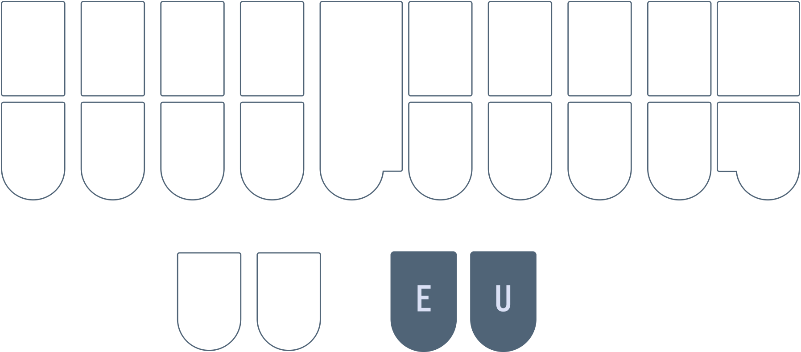
Examples
- pit
PEUT - kill
KEUL - fit
TPEUT - lip
HREUP - fir
TPEUR
Again, with
TPEUR, the addition of the-Rkey changes the vowel subtly, but that is accepted within our short vowel rules.
Section practice
Left hand d, b, and l
TKis "d" as in "dab"PWis "b" as in "bot"HRis "l" as in "let"

Examples
- dad
TKAD - bar
PWAR - lap
HRAP - bled
PWHRED
Mnemonics
Feel free to come up with your own or even suggest some!
- Each of these chords are simply two keys in a column
TKis pressed by the left hand ring fingerPWis pressed by the left hand middle fingerHRis pressed by the left hand index finger
- Think "DBL"
- double (these are double keys)
- From Art of Chording
- decibel
- database lover
- double (these are double keys)
Section practice
Chapter 5 test
This chapter's test consists of all the practice drills you have done so far in this chapter. Make sure your settings are configured as such:

- Limit word count: 45
- Start from word: 1
- Repetitions: 3
- Sort: random
- Show hint for every word: unchecked
- Hide hint on last repetition: unchecked
- Show hint on misstroke: checked
Click here to access the chapter 5 test
Recommended completion goal
This is only a suggestion; it is not a requirement to move to the next chapter!
Aim for 10–20 WPM with 90% accuracy.
You may use the test material as practice!
Chapter 6: Left hand consonants continued
Recommended pace
Recommended time to spend on this chapter: 2–5 days.
- Read Left hand f, q, and m and complete the drill (20 minutes)
- Repeat the drill as needed
- Read left hand g, n, and y and complete the drill (20 minutes)
- Repeat the drill as needed
- Read left hand z, v, and j and complete the drill (20 minutes)
- Repeat the drill as needed
- Attempt the test (20 minutes)
- Practise as needed
Remember to take breaks!
Useful links
- Single syllable fqm words drill
- Single syllable gny words drill
- Single syllable zvj words drill
- Chapter 6 test
Left hand f, q, and m
TPis "f" as in "fad"KWis "q" as in "quit"PHis "m" as in "mod"
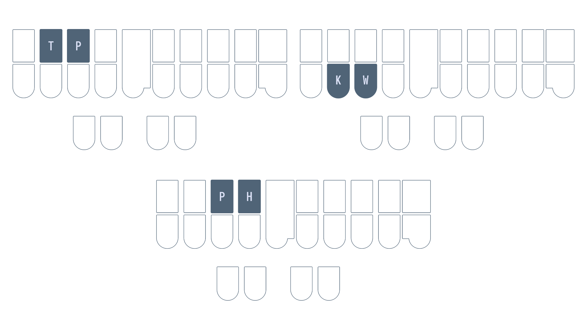
Wouldn't PH as "f" make more sense?
Why not use PH for "f"?. After all, this would be easier to remember since "ph" has the same sound as "f". However, it would be impossible to chord "fl" sounds as the PH and HR chords overlap. PHR already represents the initial "pl" consonants. We would run into ambiguity if we also defined PHR to be the "fl" consonants (e.g., "plat" and flat").
Examples
- far
TPAR - flat
TPHRAT - quill
KWEUL - quip
KWEUP - met
PHET - more
PHOR
Mnemonics
Feel free to come up with your own or even suggest some!
- Each of these chords are simply two keys in a row
TPis the top row pressed by the ring and middle fingersKWis the bottom row pressed by the ring and middle fingersPHis the top row pressed by the middle and index fingers
- Think "FQM" in steno order (top to bottom, left to right!)
- fully qualified mountain
- first quill made
Section practice
Left hand g, n, and y
TKPWis "g" as in "get"
NOTE:
TKPWis only used for the "hard g" sound. For example, the word "gel" would not useTKPWas the initial consonant is not a "soft g" (a "j" sound).
TPHis "n" as in "not"KWR*is "y" as in "yet"KWRis pressed using the left hand ring, middle, and index fingers
If you use Plover's lookup tool, you will notice that a lot of words beginning with "y" can be written using
KWR(without the asterisk). It's recommended that you don't use these outlines.
KWR* is only used when the word starts with the letter "y"; if a word has a "y" sound but doesn't start with a "y", simply don't use a left hand consonant chord.
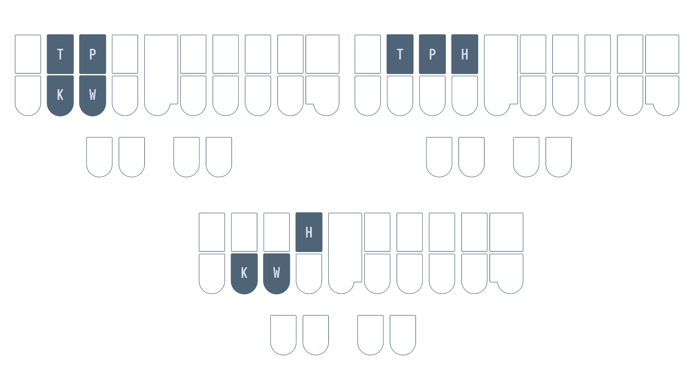
Examples
- gloss
TKPWHROS - gull
TKPWUL - nap
TPHAP - net
TPHET - yeet
KWRAO*ET - yes
KWR*ES - use
AOUS
Mnemonics
Feel free to come up with your own or even suggest some!
TKPWis a group of 4 keys pressed by the ring and middle fingersTPHis a row of 3 keys pressed by the ring, middle, and index fingersKWR*is a row of 4 keys composed of the left hand ring, middle, and index fingers and the right hand index finger (optional)
Section practice
Left hand z, v, and j
S*is "z" as in "zit"SRis "v" as in "vat"SKWRis "j" as in "job"

Mnemonics
Feel free to come up with your own or even suggest some!
- The "z" sound is similar to the "s" sound and thus they only differ in the asterisk key
- The chemical element strontium (symbol Sr) is not vanadium
SKWRis just the bottom row of the left hand
Examples
- zap
SA*P - zip
S*EUP - var
SRAR - ver
SRER - jib
SKWREUB - jot
SKWROT
Section practice
Chapter 6 test
This chapter's test consists of all the practice drills you have done in this chapter. Make sure your settings are configured as such:
- Limit word count: 45
- Start from word: 1
- Repetitions: 3
- Sort: random
- Show hint for every word: unchecked
- Hide hint on last repetition: unchecked
- Show hint on misstroke: checked
Click here to access the chapter 6 test
Recommended completion goal
This is only a suggestion; it is not a requirement to move to the next chapter!
Aim for 10–20 WPM with 90% accuracy.
You may use the test material as practice!
Chapter 7: Vowels
Recommended pace
Recommended time to spend on this chapter: 2–3 days.
- Read
OE,OU, andOEUand complete the drill (25 minutes)- Repeat the drill as needed
- Read
AEUand complete the drill (15 minutes)- Repeat the drill as needed
- Read
AOUand complete the drill (15 minutes)- Repeat the drill as needed
- Attempt the test (20 minutes)
- Practise as needed
Remember to take breaks!
Useful links
- Single syllable
OE,OU, andOEUwords drill - Single syllable
AEUwords drill - Single syllable
AOUwords drill - Chapter 7 test
Intro
Vowels are reportedly the most difficult part of learning steno. Part of this is due to the fact that vowels are pronounced differently in different dialects of English. Unfortunately, I grew up learning General American English. This is the accent that Lapwing is based on. If you speak a different accent, you may have to subvocalize with an American accent.
I'm making an effort to include IPA with the hopes that they will be useful for some. However, I must make the disclaimer that I have never taken a formal linguistics course nor am I an enthusiast. I apologize for any errors that may be present in this page—do reach out to me if you have corrections!
OE, OU, and OEU

OEis the "long o" vowel as in "tote"- /oʊ/
Linguistically, calling this a "long vowel" is incorrect (this is actually a diphthong), but it's what most people would be familiar with (see here).
-
OUis the "ow" sound as in "cow"- /aʊ/
-
OURis the sound as in "hour"- /aʊ ər/
-
OEUis the sound as in "toy"- /ɔɪ/
Examples
- foe
TPOE - sow
SOE - now
TPHOU - power
POUR - coil
KOEUL - soy
SOEU
Mnemonics
Feel free to come up with your own or even suggest some!
- The word "foe" uses
OEwhich you can tell from its spelling- Apply this to other words with the same vowel sound!
- The word "our" uses
OUwhich, again, you can tell from its spelling - You can think of
OEUasO+EUor "oi" which resembles its pronunciation and spelling (as in the word "soil")
Section practice
Single syllable OE, OU, and OEU words drill
AEU

AEUis the "long a" vowel as in "pay"- /eɪ/
NOTE: be careful with words like "bag", "tank", and "sag"; these use
Afor /æ/ and notAEU. The difference is subtle, but try to convince yourself that these are different vowels.
AEURis the sound as in "pair"- /ɛr/
Examples
- day
TKAEU - lay
HRAEU - care
KAEUR - pair
PAEUR
Mnemonics
Feel free to come up with your own or even suggest some!
- You can think of
AEUasA+EUor "ai" which resembles its pronunciation and spelling (as in the word "paid") - If the notion of "long" and "short" vowels (as described above) is familiar, you can think of transforming the
Akey into a "long a" by combining it with the two keys on the other side- "Long a" =
A+ (vowel keys on other hand)
- "Long a" =
Section practice
Single syllable AEU words drill
AOU

-
AOUrepresents two different sounds:- The "long u" sound as in "cube"
- /ju/
- The "long oo" sound as in "glue"
- /u/
- Only when the sound is not spelled with "oo"
- E.g., "loo" would not use
AOU
- E.g., "loo" would not use
- The "long u" sound as in "cube"
-
AOURis the sound as in "cure"- /ʊər/
Examples
- ew
AOU - sue
SAOU - lure
HRAOUR - pure
PAOUR
Mnemonics
Feel free to come up with your own or even suggest some!
- If the notion of "long" and "short" vowels (as described above) is familiar, you can think of transforming the
Ukey into a "long u" by combining it with the two keys on the other side- "Long u" =
U+ (vowel keys on other hand)
- "Long u" =
- The "long u" sound is also quite similar to the "long oo" sound
Section practice
Single syllable AOU words drill
Chapter 7 test
This chapter's test consists of all the practice drills you have done in this chapter. Make sure your settings are configured as such:
- Limit word count: 45
- Start from word: 1
- Repetitions: 3
- Sort: random
- Show hint for every word: unchecked
- Hide hint on last repetition: unchecked
- Show hint on misstroke: checked
Click here to access the chapter 7 test
Recommended completion goal
This is only a suggestion; it is not a requirement to move to the next chapter!
Aim for 10–20 WPM with 90% accuracy.
You may use the test material as practice!
Chapter 8: Vowels continued
Recommended pace
Recommended time to spend on this chapter: 2–3 days.
- Read
AOEand complete the drill (15 minutes)- Repeat the drill as needed
- Read
AOEUand complete the drill (15 minutes)- Repeat the drill as needed
- Read
AUand complete the drill (15 minutes)- Repeat the drill as needed
- Read
AEand complete the drill (15 minutes)- Repeat the drill as needed
- Read
AOand complete the drill (15 minutes)- Repeat the drill as needed
- Attempt the test (20 minutes)
- Practise as needed
Remember to take breaks!
Useful links
- Single syllable
AOEwords drill - Single syllable
AOEUwords drill - Single syllable
AUwords drill - Single syllable
AEwords drill - Single syllable
AOwords drill - Chapter 8 test
Intro
Vowels are reportedly the most difficult part of learning steno. Part of this is due to the fact that vowels are pronounced differently in different dialects of English. Unfortunately, I grew up learning General American English. This is the accent that Lapwing is based on. If you speak a different accent, you may have to subvocalize with an American accent.
I'm making an effort to include IPA with the hopes that they will be useful for some. However, I must make the disclaimer that I have never taken a formal linguistics course nor am I an enthusiast. I apologize for any errors that may be present in this page—do reach out to me if you have corrections!
What is a conflict?
Throughout this page, you will see the word "conflict" thrown around a lot. Since steno is a primarily phonetic system, we will sometimes encounter pairs of words which would be written exactly the same. For example, we learned that AEUR represents the sound in "pair". However, this is also the same sound in the word "pear". We would call this an example of a "conflict" (these two words conflict with the same outline). As you'll see, we usually resolve these conflicts by using different chords based on spellings.
AOE

AOEis the "long e" sound as in "beet"- /i/
AOERis the sound as in "peer"- /ɪər/
Examples
- peel
PAOEL - teal
TAOEL - here
HAOER - seer
SAOER
Mnemonics
Feel free to come up with your own or even suggest some!
- If the notion of "long" and "short" vowels (as described in the previous chapter) is familiar, you can think of transforming the
Ekey into a "long e" by combining it with the two keys on the other side- "Long e" =
E+ (vowel keys on other hand)
- "Long e" =
Section practice
Single syllable AOE words drill
AOEU

AOEUis the "long i" sound as in "ice"- /aɪ/
AOEURis the sound as in "ire"- /aɪər/
Examples
- light
HRAOEUT - tile
TAOEUL - liar
HRAOEUR - tire
TAOEUR
Mnemonics
Feel free to come up with your own or even suggest some!
- If the notion of "long" and "short" vowels (as described in the previous chapter) is familiar, you can think of transforming the "i" chord into a "long i" by combining it with the two keys on the other side
- "Long i" =
EU+ (vowel keys on other hand)
- "Long i" =
Section practice
Single syllable AOEU words drill
AU

We learned the following in chapter 5 (rule 2 of short vowels):
If a word is spelled using multiple vowel letters that (together) are pronounced as a single short vowel, use the vowel key that corresponds to the sound.
The AU chord is one exception to this rule. It is used in words like "bought", and "caught". These have the same sound as the O key by itself. However, AU is used in these words as they are not spelled with a single "o".
So while the following are written using O:
- bot
PWOT - cot
KOT
The words below are written using AU:
- bought
PWAUT - caught
KAUT
Minor conflicts
Words spelled with "au" are given A*UL when there is a conflict:
- call
KAUL - caul
KA*UL - hall
HAUL - haul
HA*UL
Words spelled with "awl" are also given A*UL when there is a conflict:
- all
AUL - awl
A*UL - ball
PWAUL - bawl
PWA*UL
These words will not be tested as there are so few of them; it would be pointless to drill these minor conflicts as you would be likely to forget about them in everyday writing. However, this conflict resolution technique is still useful to keep in mind.
Section practice
Single syllable AU words drill
AE for AEU

Take a look at the following words:
- pair
- pear
We can't assign the outline PAEUR to both of these words, so we will need a different vowel chord to differentiate the two. This is where AE comes into play. It is a secondary chord that can represent the same vowel as AEU when there is conflict.
In these conflicts involving the "long a" sound, one word will use AEU. This is the word with higher priority. The other word will use AE; this is the word with lower priority. We use spellings to determine the priority to assign to a word.
Highest priority: "ai" or "ei" spellings
Words spelled with "ai" or "ei" get the highest priority, and are always written using AEU:
AEUTeightTPAEURfairPHAEUPBmainPAEURpair
Medium priority: "a_e" spellings
These words get medium priority. Use AE for these words if there is a conflict with a word in the above category.
AETate (AEUTis already "eight")TPAERfare (TPAEURis already "fair")TAEURtare ("tair" is not a word)PHAEPBmane (PHAEUPBis already "main")
Lowest priority: "ea" spellings
These words get lowest priority. If there is a conflict with any of the two categories above, use AE.
TAERtear (TAEURis already "tare")PAERpear (PAEURis already "pair")SWAEURswear ("swair" and "sware" are not words)
Remember that AE is only used to disambiguate. Try not to associate this chord with any specific spelling or sound.
Flowchart Summary
Here's a flowchart to summarize the above:

AE for AOE
In addition to the AEU vowel, AE can also represent the AOE vowel when there is ambiguity. Again, we assign certain spellings to higher priority and use AE for lower priority spellings when there are homonyms.
Highest priority: "ee" spellings
All words spelled with "ee" use AOE
TPAOETfeetPAOEpeeSAOEDseedTAOEtee
Medium priority: "ie" spellings
PAOESpiece
Lowest priority: "ea" spellings
TPAETfeat (TPAOETis already "feet")PAEpea (PAOEis already "pee")
Flowchart Summary
Here's a flowchart to summarize the above:

Other uses of AE for disambiguating
AE can also be used for "ea" spellings that conflict with short vowels.
- lead
HRAED(HREDis already "led") - bread
PWRAED(PWREDis already "bred")
AE 3-way conflicts
You may wonder about, or even encounter a few 3-way conflicts. For example, "pair", "pare", and "pear". There really aren't that many of these so Lapwing doesn't actually provide any rules on how to deal with these.
By default the Lapwing dictionary assigns PAER to "pear" and PA*EUR to "pare". The reason for this is that "pear" is much more common and is considered higher priority than "pare". You are, of course, free to disagree with this logic and change things around! It is really up to you how you want to deal with these conflicts.
NOTE: considering priority based on how common words are is generally used as a last resort where the rules are fuzzy or nonexistent (like in this example). You will not see this in any concrete Lapwing rules.
Section practice
Single syllable AE words drill
AO

This chord has two uses:
- Words spelled with "oo", regardless of their pronunciation
- wood
WAOD - hood
HAOD - blood
PWHRAOD - tool
TAOL
- wood
- Words spelled with "oa" when there is a conflict
- oar
AOR(ORis already "or") - soar
SAOR(SORis already "sore") - boar
PWAOR(PWORis already "bore") - road
RAOD(ROEDis already "rode")
- oar
NOTE: you may be tempted to write "boat" as
PWAOT, but this is incorrect.AOis primarily used for "oo" spellings. Therefore,PWAOTis actually the word "boot";PWOETwould be "boat".
Section practice
Single syllable AO words drill
Chapter 8 test
This chapter's test consists of all the vowel drills you have done so far (including chapter 7 material). Make sure your settings are configured as such:
- Limit word count: 45
- Start from word: 1
- Repetitions: 3
- Sort: random
- Show hint for every word: unchecked
- Hide hint on last repetition: unchecked
- Show hint on misstroke: checked
Click here to access the chapter 8 test
Recommended completion goal
This is only a suggestion; it is not a requirement to move to the next chapter!
Aim for 10–20 WPM with 90% accuracy.
You may use the test material as practice!
Chapter 9: Right hand chords
Recommended pace
Recommended time to spend on this chapter: 3–6 days.
- Read right hand v and complete the drill (10 minutes)
- Repeat the drill as needed
- Read right hand st and complete the drill (10 minutes)
- Repeat the drill as needed
- Read right hand m and k and complete the drill (20 minutes)
- Repeat the drill as needed
- Read right hand mp, th, and lk and complete the drill (20 minutes)
- Repeat the drill as needed
- Attempt the test (20 minutes)
- Practise as needed
Remember to take breaks!
Useful links
- Single syllable right hand v words drill
- Single syllable right hand st words drill
- Single syllable right hand m and k words drill
- Single syllable right hand mp, th, and lk words drill
- Chapter 9 test
Right hand v
- "v" as in in "cave" is
-F

Examples
- solve
SOF - move
PHAOUF - love
HROF
Mnemonics:
Feel free to come up with your own or even suggest some!
- The "v" sound is quite similar to "f" ("v" is simply voiced "f")
Conflicts with f
You may run into conflicts where it's ambiguous what the -F in a steno outline represents. For example, "safe" and "save" would both be written as SAEUF. In these cases, we reserve -F for the word spelled with "f" and instead use *F for the word spelled with "v":
- safe
SAEUF - save
SA*EUF - waif
WAEUF - waive
WA*EUF
Section practice
Right hand st
How would you write the word "fast" with Lapwing theory? We know the left hand initial "f" consonant is TP and the vowel is simply just A, but what do we do with the ending "-st" consonant? There are, of course, the -S and -T keys on the right side, but these are out of order. TPATS is the word "fats", not "fast".
Handling the ending "-st" consonant is one such situation where different steno theories disagree. In Lapwing theory, we use -FT primarily and *S when there is a conflict:

- fast
TPAFT - haste
HAEUFT - cast
KAFT - lost
HRO*S(HROFTis already "loft") - list
HR*EUS(HREUFTis already "lift")
Section practice
This section's practice material also includes some "-ft" words like "loft" and "lift".
Right hand m and k
-PLis "-m" as in "calm"-BGis "k" as in "back"
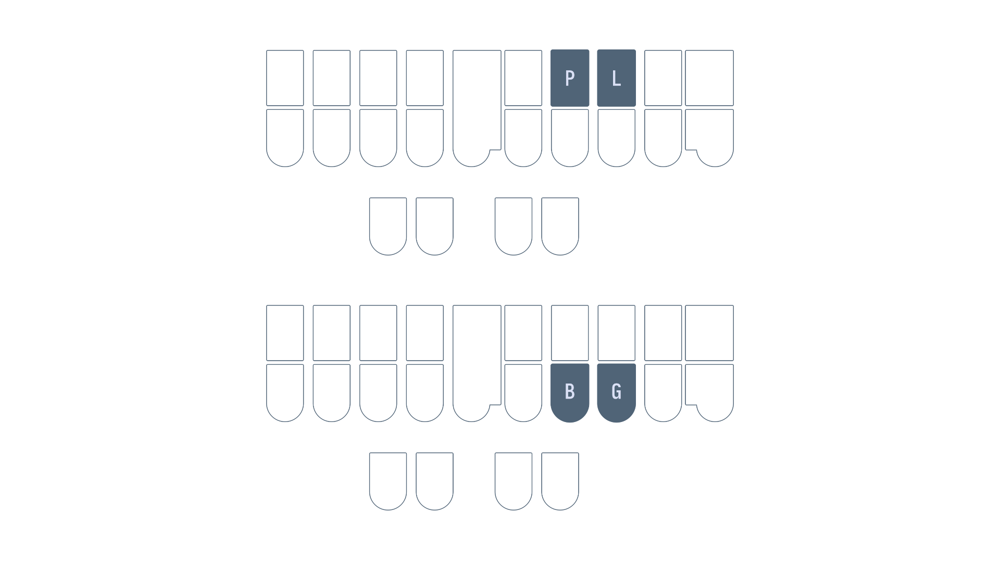
Examples
- crumb
KRUPL - form
TPORPL - lark
HRARBG - sack
SABG
Mnemonics
- Each of these chords are simply two keys in a row
-PLis the top row pressed by the middle and ring fingers-BGis the bottom row pressed by the middle and ring fingers
- Think "plum" for
-PL
Section practice
Right hand mp, th, and lk
*PLis "-mp" as in "bump"*Tis "-th" as in "path"*LGis "-lk" as in "calc"
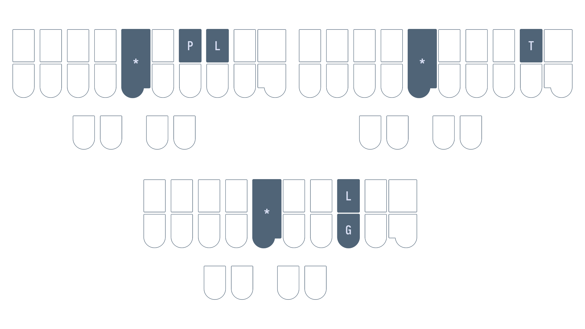
Examples
- crimp
KR*EUPL - shrimp
SHR*EUPL - bath
PWA*T - moth
PHO*T - elk
*ELG - talc
TA*LG
Mnemonics
Feel free to come up with your own or even suggest some!
*PLis the "m" chord with an asterisk*Tis the-Tkey with an asterisk- The "g" and "k" sounds are quite similar and
*LGis the-LGchord with an asterisk
Section practice:
Single syllable mp, th, and lk words
Chapter 9 test
This chapter's test consists of all the practice drills you have done in this chapter. Make sure your settings are configured as such:
- Limit word count: 45
- Start from word: 1
- Repetitions: 3
- Sort: random
- Show hint for every word: unchecked
- Hide hint on last repetition: unchecked
- Show hint on misstroke: checked
Click here to access the chapter 9 test
Recommended completion goal
This is only a suggestion; it is not a requirement to move to the next chapter!
Aim for 10–20 WPM with 90% accuracy.
You may use the test material as practice!
Chapter 10: Right hand chords continued
Recommended pace
Recommended time to spend on this chapter: 2–5 days.
- Read right hand n, j, and lj and complete the drill (20 minutes)
- Repeat the drill as needed
- Read right hand rv, rf, ng, and nk and complete the drill (20 minutes)
- Repeat the drill as needed
- Read right hand ch, sh and rch and complete the drill (20 minutes)
- Repeat the drill as needed
- Attempt the test (20 minutes)
- Practise as needed
Remember to take breaks!
Useful links
- Single syllable right hand n, j, and lj words drill
- Single syllable right hand rv, rf, ng, and nk words
- Single syllable right hand ch, sh, and rch/nch words
- Chapter 10 test
Right hand n, j, and lj
-PBis "-n" as in "lawn"-PBLGis "-j" as in "grudge"-LGrepresents two two sounds:- "-lj" as in "bulge"
- "-lch" as in "mulch"
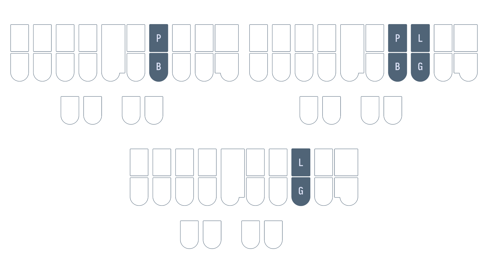
Examples
- fin
TPEUPB - sign
SAOEUPB - lodge
HROPBLG - nudge
TPHUPBLG - bilge
PWEULG - belch
PWELG - squelch
SKWELG
Mnemonics:
Feel free to come up with your own or even suggest some!
- Think "peanut butter" for
-PB -PBLGis a cluster of 4 keys pressed with the right hand middle and ring fingers-LGresembles the "-lg" sound in spelling and is somewhat close to the "-lch" sound
Section practice
Single syllable right hand n, j, and lj/lch words
Right hand rv, rf, ng, and nk
-FRBis "-rv" as in "swerve"*FRBis "-rf" as in "turf"
The reason
-FRBis "-rv" and not "-rf" is that the former is a bit more common.
-PBGrepresents two sounds:- "-ng" as in "tang"
- "-nj" as in "strange"
*PBGis "-nk" as in "plank"
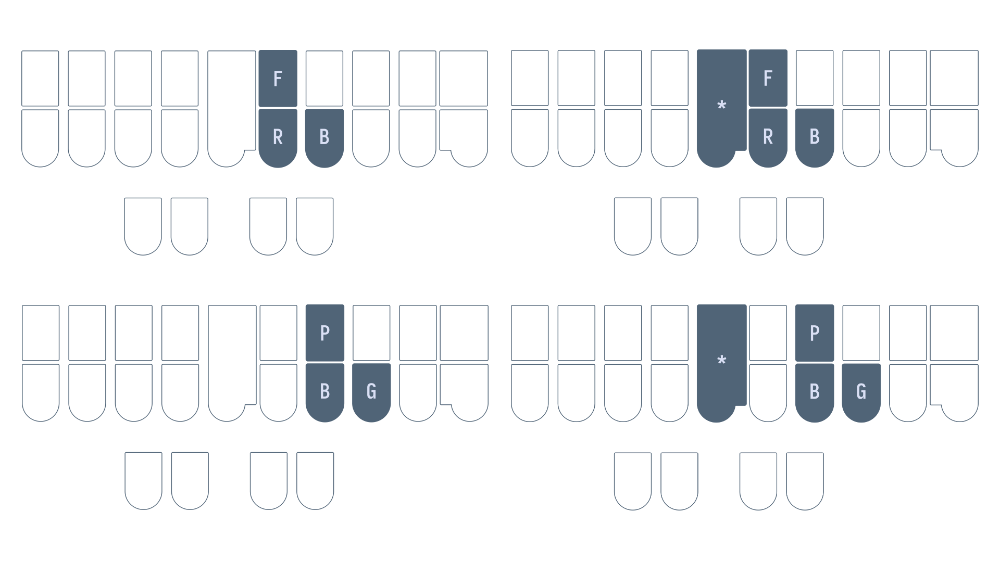
Examples
- curve
KUFRB - carve
KAFRB - turf
T*UFRB - serf
S*EFRB - ling
HREUPBG - sing
SEUPBG - tank
TA*PBG - sink
S*EUPBG
Mnemonics:
Feel free to come up with your own or even suggest some!
-FRBcontains the-Rkey and also looks like the letter "v" on its side- The "v" and "f" sounds are quite similar and as long as you know the "-rv" chord, remember that the "-rf" chord is exactly the same but with the asterisk
-PBGis simply just the "n" chord and the-Gkey combined*PBGis just the "-ng" chord with the asterisk (the "-ng" and "-nk" sounds are quite similar)
Section practice
Single syllable right hand rv, rf, ng, and nk words
Right hand ch, sh, and rch
-FPis "-ch" as in "couch"-RBis "-sh" as in "trash"-RBSis the "shus" sound as in "cautious"
-FRPBrepresents two sounds:- "-rch" as in "arch"
- "-nch" as in "hunch"

Examples
- hitch
HEUFP - patch
PAFP - mash
PHARB - sash
SARB - luscious
HRAOURBS - spacious
SPAEURBS - larch
HRAFRPB - parch
PAFRPB - crunch
KRUFRPB - punch
PUFRPB
Mnemonics:
Feel free to come up with your own or even suggest some!
-FPand-RBare rows of horizontal keys pressed by the right hand index and middle fingers- These are both *h chords, remember that
-FPcomes before-RBin steno order which matches up with the letter "c" coming before "s" in the alphabet
- These are both *h chords, remember that
- The "-rch"/"-nch" chord
-FRPBis the combination of the previous two
Section practice
Single syllable right hand ch, sh, and rch/nch words
Chapter 10 test
This chapter's test consists of all the practice drills you have done in this chapter. Make sure your settings are configured as such:
- Limit word count: 45
- Start from word: 1
- Repetitions: 3
- Sort: random
- Show hint for every word: unchecked
- Hide hint on last repetition: unchecked
- Show hint on misstroke: checked
Click here to access the chapter 10 test
Recommended completion goal
This is only a suggestion; it is not a requirement to move to the next chapter!
Aim for 10–20 WPM with 90% accuracy.
You may use the test material as practice!
Chapter 11: Right hand compound clusters
Recommended pace
Recommended time to spend on this chapter: 2–5 days.
- Read right hand shun and kshun and complete the drill (20 minutes)
- Repeat the drill as needed
- Read right hand ment and let and complete the drill (20 minutes)
- Repeat the drill as needed
- Read right hand bl and complete the drill (20 minutes)
- Repeat the drill as needed
- Attempt the test (20 minutes)
- Practise as needed
Remember to take breaks!
Useful links
- Right hand shun, kshun, and x words
- Right hand ment and let words drill
- Right hand bl words drill
- Chapter 11 test
Intro
So far, we have been looking at single sounds that make up single syllable words. In this chapter, we will look at compound clusters which are chords that can represent more than just a single consonant.
Right hand shun, kshun, and x
-GSis "-shun" as in "ocean"-BGSrepresents two sounds:- "-x" as in "tax"
- "-kshun" as in in "friction"

Examples
- motion
PHOEGS - caution
KAUGS - fax
TPABGS - tex
TEBGS
"-kshun" and "-x" conflicts
Some words like "axe" and "action" conflict with the same outline: ABGS. In these cases, we give the "-x" sound higher priority and relegate the "-kshun" sound to *BGS (same chord, but with the asterisk key).
Examples
- faction
TPA*BGS(sinceTPABGSis already "fax") - section
S*EBGS(sinceSEBGSis already "sex")
Mnemonics:
Feel free to come up with your own or even suggest some!
- "mugs in the ocean"
-BGSas the "-x" chord is simply just the combination of the "-k" chord-BGand the-Skey-BGSas the "-kshun" chord overlaps with the "-k" chord-BGand the "-shun" chord-GS
Section practice
Right hand shun, kshun, and x words
Right hand ment and let
-PLTis "-ment" as in "moment"-LTis "-let" as in "scarlet"

Examples
- garment
TKPWARPLT - torment
TORPLT - roulette
RAOULT - wallet
WAULT
Mnemonics:
Feel free to come up with your own or even suggest some!
- Taking the middle out of "ment" gives "mt" which is what
-PLTrepresents - Taking the middle out of "let" gives "lt" which is what
-LTrepresents
Section practice
Unfortunately, there is not a lot of practice material for single stroke words containing these chords.
Right hand bl and bility
-BLrepresents several different sounds:- "-bl" as in "double"
- "-abl" as in "pliable"
- "-ibl" as in "possible"
- "-b_l" as in "global", "mobile", "label"
All these sounds are similar to one another in that they all contain "bl" and optionally an unstressed vowel. This refers to a vowel that isn't emphasized. Think about how you would say the phrase "lay bell" versus the word "label". In the first case, the "e" is stressed while in the second case, it is not.
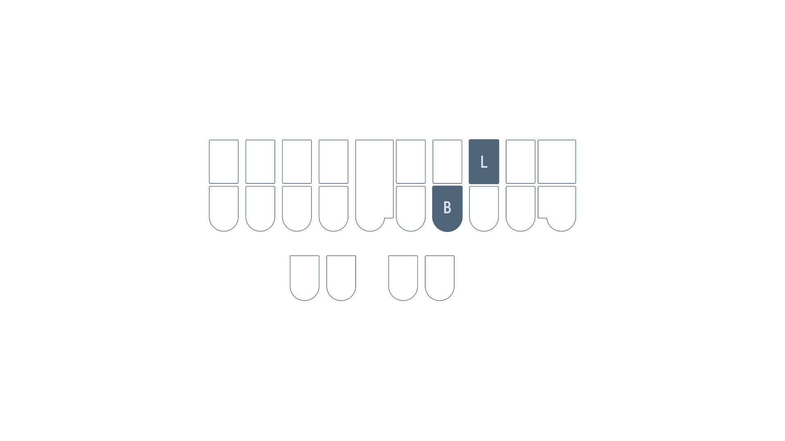
Examples
- pebble
PEBL - wobble
WOBL - playable
PHRAEUBL - chewable
KHAOUBL - tribal
TRAOEUBL - rebel
REBL
NOTE: the word "rebel" can be pronounced as
RAOE/PWELorREBLdepending on if it is a verb or a noun. While the dictionary contains both, the single stroke variant is recommended as it is faster.
Mnemonics:
Feel free to come up with your own or even suggest some!
-BLalready looks a lot like the sounds it represents, you just have to remember that you can skip over unstressed vowels as well.
Section practice
Unfortunately, there is not a lot of practice material for single stroke words containing these chords.
Chapter 11 test
This chapter's test consists of all the practice drills you have done in this chapter. Make sure your settings are configured as such:
- Limit word count: 45
- Start from word: 1
- Repetitions: 3
- Sort: random
- Show hint for every word: unchecked
- Hide hint on last repetition: unchecked
- Show hint on misstroke: checked
Click here to access the chapter 11 test
Recommended completion goal
This is only a suggestion; it is not a requirement to move to the next chapter!
Aim for 10–30 WPM with 90% accuracy.
You may use the test material as practice!
Chapter 12: Wrapping up basic words
Recommended pace
Recommended time to spend on this chapter: <1 day.
- Read Miscellaneous orthographic chords and complete the drill (10 minutes)
- Read The stroke separator (5 minutes)
- Read When sounds can't follow steno order (5 minutes)
- Read right hand xt (5 minutes)
Remember to take breaks!
Useful links
Great job!
If you've been following the recommended pacing, you should now be anywhere from 3 to 7 weeks into your stenography journey! That is very impressive and you should be proud of your perseverance! With this kind of commitment, chances are you will continue to do well in later chapters.
What we've learned so far
You should be pretty familiar with the steno layout and you should also understand how to write most single syllable words—even if you're not very fast yet. We will finally wrap up single syllable words in this chapter before moving onto other topics.
Miscellaneous orthographic chords
Left hand chords
We've already learned a few orthographic chords like AU and AO whose usages depend on spelling rather than pronunciation. There are also a few left hand consonant chords that behave the same way.
- "ph" as in "phase" is written with
TP* - "wr" as in "write" is written with
WR - "wh" as in "when" is written with
WH
All of these except TP* are pretty intuitive as their steno keys match the spelling that they represent.
KR for c in conflicts
When there is a conflict between a word that contains the "soft c" sound and another word that is spelled with an s, use KR.
Examples
- cent
KREPBT- As
SEPBTis already "sent"
- As
- cite
KRAOEUT- As
SAOEUTis already "sight"
- As
KH for hard c spelled ch
Words spelled with "ch" can sometimes be homophones with words spelled with only a single "c". In these cases, we use K for the words spelled with a "c" and KH for words spelled with "ch".
KH can also be used in general for words spelled with "ch" but pronounced with a "hard c". For example, in the word "choreography", the initial consonant is a "hard c" so K would typically be used on the left hand. However, using KH is also a valid choice. This is helpful if your first instinct is to use the "ch" spelling to form the left hand consonant.
NOTE: the dictionary is not complete when it comes to "ch" words pronounced with a "hard c" and written with
KH. I would recommend sticking toKand only usingKHwhen there is a conflict. However, you are completely free to add these if you wish.
Examples
- chord
KHORDKORDis already "cord"
- charisma
KHA/REUS/PHAKA/REUS/PHAis also valid
-S for all s
Use -S for an ending "s" letter, regardless of if it is pronounced as a "z".
Examples
- fuse
TPAOUS - cruise
KRAOUS
Conflicts
You will inevitably run into some conflicts such as "race", "raise", "raze", and "raiz". -S is given to "race" since it has an "s" sound, but how do we deal with the rest? It's actually entirely up to you as to how you might want to proceed. Conflicts such as these are tricky because they don't appear very often; you're better off memorizing the exceptions than trying to learn rules to deal with them.
By default, Lapwing gives -Z to "raise" since it's quite common and is spelled with an "s" (thereby giving it higher priority, in a sense). To write "raze", you'd use an alternative vowel chord: RAEZ. Finally, for "raiz", you could use the asterisk key. Although, this word isn't even in the default dictionary. Thus, you'd write these words like so:
- "race"
RAEUS - "raise"
RAEUZ - "raze"
RAEZ - "raiz"
RA*EUZ
This illustrates how messy the English language can be and how designing a theory to work around all of these conflicts without any arbitrary rules/briefs can be a difficult task. When you run into conflicts with more than three words in the future, do remember that (unless explicitly stated) it is perfectly acceptable (even expected!) to change around some outlines. It's best to create outlines that make sense to you instead of memorizing someone else's personal intuition.
y sound without the letter y
If you encounter a word that has the "y" sound, only use KWR* if it is spelled with a "y". If it isn't spelled with a "y" don't use any left hand consonant chord.
Examples
- yes
KWR*ES - yep
KWR*EP - use
AOUS - usual
AOURB/WAL- There aren't, unfortunately, a lot of single stroke words to demonstrate this
Section practice
Left hand single syllable orthographic chords drill
It's very recommended that you complete this drill.
The stroke separator
So far we have only been looking at single stroke words. We will soon look at words that require multiple strokes to be written. To notate these multistroke outlines, we use the slash character / to separate strokes.
For example, to write the outline TPEUL/-PL, you would press TPEUL, release all the keys, and then press -PL.

When sounds can't follow steno order
Sometimes, it is impossible to write a single syllable word using in a single stroke (see the examples below). In these cases, write as much as the word as you can in a single stroke, and then complete the rest using the corresponding right hand key or chord that finishes the word. Note that some right chords are different to their canonical form when using this technique:
- To end a word with "-t", use
*T - To end a word with "-f" or "-v", use
*F
There will be no practice material for this section, but do keep this technique in mind.
Examples
- film
TPEUL/-PL - helm
HEL/-PL - help
HEL/-P - kelp
KEL/-P - list
HREUS/*T- Also
HR*EUS(recommended, see note below)
- Also
- thirst
THEURS/*T- Also
TH*EURS(recommended, see note below)
- Also
- sixth
SEUBGS/*T - elf
EL/*F - shelf
SHEL/*F - peddle
PED/-L - saddle
SAD/-L
NOTE: remember that
*Scan be used to represent the "-st" cluster when-Fis not available. It is highly recommended you use*Sinstead of splitting these words into two strokes.
Right hand xt
-GTis "-xt" as in text
There are only a handful of words in English that end in "-xt" and only two that are one syllable long in the Lapwing dictionary. You can pretty much just memorize these as briefs.
Examples
- text
TEGT - next
TPHEGT
No test this chapter!
Chapter 13: Prefixes and suffixes
Recommended pace
Recommended time to spend on this chapter: 2–5 days.
- Read Prefix strokes (20 minutes)
- Read Suffix strokes and complete the drills (60 minutes)
- Repeat the drills as needed
- Read Prefix priority (5 minutes)
- Attempt the test (20 minutes)
- Practise as needed
Remember to take breaks!
Useful links
- Words with -y and -ly suffixes drill
- Words with -ar, -or, and -er suffixes drill
- Words with -ful and -ness suffixes drill
- Right hand ment and let words
- Right hand bl words drill
- Right hand kwr suffix words drill
- Right hand *bility words drill
- Chapter 13 test
Intro
Every chapter up until now has been focusing on single syllable words. When it comes to words with more than one syllable, we simply just break these into multiple strokes. How exactly we do this depends on the situation. We will first look at more straightforward situations in this chapter.
Prefix strokes
Every translation we have been writing so far has been a regular word with no special formatting. This means that Plover will output a space before every word—this should be pretty familiar to you from the drills we have been practising. Let's take a look at how Plover parses these translations. In the main window of Plover, go to Tools → Add Translation. With your steno keyboard, write STROEBG into the Strokes field. You should see the following:

Now let's look at a prefix stroke. This is a stroke that tells Plover to suppress the next space after outputting a translation. If you write PRAOE into the Strokes field. You should see the following:

Here, the curly braces denote that there is special formatting rules contained inside the braces. The caret tells Plover to suppress the space where it is located. Any translation of the form ___^ is a prefix.
If you were to write the word "preview", you would have to split this word into "pre^" + "view". Try it yourself—open a text document and write the strokes PRAOE and then SRAOU. In raw steno, this would be notated as PRAOE/SRAOU with the / character representing a stroke separator.
Most prefix strokes are fairly intuitive and take precedence when they conflict with other translations. For example, the "for^" prefix as in "forget" TPOR/TKPWET is written as TPOR while the word "for" is briefed. Thus, it's not necessary to memorize many of these strokes.
Common Prefix Strokes
- a^
A- As in "about"
A/PWOUT
- As in "about"
- co^
KOE- As in "costar"
KOE/STAR
- As in "costar"
- de^
TKAOE- As in "deplane"
TKAOE/PHRAEPB
- As in "deplane"
- for^
TPOR- As in "forgo"
TPOR/TKPWOE
- As in "forgo"
- in^
EUPB- As in "infix"
EUPB/TPEUBGS
- As in "infix"
- mis^
PHEUS- As in "mistake"
PHEUS/TAEUBG
- As in "mistake"
- non^
TPHOPB- As in "nonstop"
TPHOPB/STOP
- As in "nonstop"
- pro^
PROE- As in "protip"
PROE/TEUP
- As in "protip"
- re^
RAOE- As in "retake"
RAOE/TAEUBG
- As in "retake"
- sub^
SUB- As in "subway"
SUB/WAEU
- As in "subway"
Prefix usage
Let's say you are trying to write the word "confuse". You may be tempted to write KOPB/TPAOUS, but you would have to know if KOPB is a prefix stroke. Even if it were, it wouldn't make sense to use it since "fuse" isn't the root word of "confuse"—the two words aren't related in meaning. Instead, you will later learn another method you should actually be using to write this word.
For now, only use prefix strokes when they make sense semantically. A prefix stroke should modify a root word that can exist on its own.
Prefixes with different pronunciations
English pronunciation differs from person to person, but even a single speaker may pronounce a word differently depending on the context. For example, you may pronounce the word "defect" as TKAOE/TPEBGT (as the noun) or TKE/TPEBGT (as the verb). Both of these outlines are valid and you will find this to be the case with many ambiguous situations.
Here is a non-exhaustive list of some alternative prefix strokes:
- "de-"
TKE - "pre-"
PRE - "pro-"
PRO - "re-"
RE
This chapter later covers looking up prefixes and suffixes which is handy for finding these alternative prefix strokes.
Practice material?
There is no practice material for this section. It's not important to explicitly know and memorize prefix strokes as they tend to be implicitly used with the syllabic splitting technique, which you will learn in a later chapter.
Suffix strokes
Much like how a prefix stroke attaches to the next word, a suffix stroke attaches to the previous word—it's exactly what you might expect from the name. Unlike prefix strokes, however, suffixes tend to be less intuitive and most have to be memorized. This section is split into smaller subsections with different "families" of suffix strokes to hopefully make them easier to remember.
It is very important that you understand when it is appropriate to use a suffix. Pay careful attention to the information in each subsection telling you when it is appropriate to use those suffix strokes.
EU suffixes
The suffixes in this subsection contain the EU vowel and some consonant on the left hand. While you've learned that EU represents the "short i" vowel as in "kiss", EU is also used for the "long e" vowel as in "tee" under some circumstances.
This comes from Plover theory's main.json and it is unfortunately an arbitrary rule that would be difficult to change Lapwing theory.
One such circumstance where EU represents the "long e" sound is in the following suffixes:
| Stroke | Suffix | Example outline | Example translation |
|---|---|---|---|
KWREU | ^y | KRAEUZ/KWREU | crazy |
HREU | ^ly | TPEURPL/HREU | firmly |
Use these suffixes only to modify a root word. Ensure that the root word relates to the full word semantically.
Examples of correct usage
- chatty
KHAT/KWREU - earthy
*ERT/KWREU - freely
TPRAOE/HREU - mostly
PHOEFT/HREU
Examples of incorrect usage
- city
SEUT/KWREU❌- This would be "sitty"
- lily
HREUL/KWREU❌- "lil" is not the root word of "lily"
Practice material
Words with -y and -ly suffixes drill
Since this only contains two suffixes, it is not necessary to spend too long on this drill. 5 minutes is sufficient.
* suffixes
The following suffixes all contain a single vowel key, an asterisk, and the -R.
| Stroke | Suffix | Example outline | Example translation |
|---|---|---|---|
A*R | ^ar | KREL/A*R | cellar |
O*R | ^or | ABGT/O*R | actor |
*ER | ^er | TAOEFP/*ER | teacher |
Use these suffixes only to modify a root word. Ensure that the root word relates to the full word semantically.
Examples of correct usage
- upper
UP/*ER - player
PHRAEU/*ER - planar
PHRAEPB/A*R - hangar
HAPBG/A*R - tormentor
TORPLT/O*R - sailor
SAEUL/O*R
Examples of wrong usage
- imposter
EUPL/POFT/*ER❌- "impost" does not refer to a deceptive action in the same way "imposter" refers to the person who partakes in this action
- mutter
PHUT/*ER❌- "mutter" does not relate to "mutt" (slang for a dog)
- pillar
PEUL/A*R❌- "pill" refers to a medicinal substance while "pillar" refers to an upright post
- sugar
SHUG/A*R❌SHUGis not a word
- humor
HAOUPL/O*R❌HAOUPLis not a word
- mentor
PHEPBT/O*R❌- "ment" is not the root of "mentor"
Do not worry about how to write these words correctly—you will soon learn about the technique you should instead be using in these scenarios.
Practice material
Words with -ar, -or, and -er suffixes drill
5–10 minutes is sufficient for this drill.
Right hand chord suffixes
These suffixes are composed entirely of consonant keys on the right hand.
| Stroke | Suffix | Example outline | Example translation |
|---|---|---|---|
-FL | ^ful | HEL/-P/-FL | helpful |
-PBS | ^ness | EUL/-PBS | illness |
Use these suffixes only to modify a root word. Ensure that the root word relates to the full word semantically.
Examples of correct usage
- hopeful
HOEP/-FL - rightful
RAOEUT/-FL - ripeness
RAOEUP/-PBS - thickness
THEUBG/-PBS
Both "ful" and "ness" are rarely used in English as non-suffixes so it's difficult to find examples of incorrect usage.
Practice material
Words with -ful and -ness suffixes drill
Right hand compound cluster suffixes
Like the last subsection, these suffixes are also composed entirely of consonant keys on the right hand.
| Stroke | Suffix | Example outline | Example translation |
|---|---|---|---|
-PLT | ^ment | TRAOET/-PLT | treatment |
-BLT | ^ability or ^ibility | EUPB/-BLT | inability |
-BL | ^able | PHRAEU/-BL | playable |
-LT | ^let | EUPB/-LT | inlet |
These suffixes can be used whenever as they are also compound clusters.
Examples: as a root word + suffix
In these words, the suffix is used to "modify" a root word.
- basement
PWAEUS/-PLT - movement
PHAOUF/-PLT - usability
AOUS/-BLT - sensibility
SEPBS/-BLT - readable
RAED/-BL - viewable
SRAOU/-BL - outlet
OUT/-LT - sublet
SUB/-LT
Examples: as a compound cluster
In these words, the suffix is used as a compound cluster; notice how the group of letters before the suffix are not root words related to the full translations.
- cement
SE/-PLT - ferment
TPER/-PLT - probability
PROB/-BLT - pliability
PHRAOEU/-BLT - humble
HUPL/-BL - arable
AEUR/-BL - omelet
OPL/-LT - bullet
PWU/-LT
Compound clusters in a single stroke
Several of these examples can be written in one stroke by putting the suffix chord into the first stroke (as you have done so in chapter 11). The above examples are only to illustrate these how these compound clusters have the second function of behaving as suffix strokes.
For these chords, it is recommended that you include the suffix chord in the first stroke for a slight speed advantage. To determine if an outline can be compressed into one stroke, take into account steno order and whether any keys are being overlapped.
For example, SEPLT is perfectly valid as none of the keys in SE overlap with the keys in -PLT. However, if you wanted to write "humble" in one stroke, you would have to overlap the -BL chord with the -PL chord in the first stroke as -B comes in between -P and -L in steno order.
The following are the same words from above but with the compound cluster in the first stroke:
- cement
SEPLT - ferment
TPERPLT - pliability
PHRAOEUBLT - arable
AEURBL - bullet
PWULT
The rest of the examples are not possible to write in one stroke:
- probability
PROB/-BLT-Bkey overlaps in both strokes
- humble
HUPL/-BL-Bkey in the second stroke overlaps with the-PLchord in the first stroke
- omelet
OPL/-LT-Lkey overlaps in both strokes
NOTE: just because overlapping these strokes is not valid in Lapwing theory, if there are no prior definitions in your dictionaries, these could make perfectly valid briefs. Feel free to add
PROBLT,HUPBL, orOPLTto your dictionary as briefs.
Practice material
Right hand *bility words drill
You should already be familiar with the other chords from the chapter 11 practice material. If you need a refresher, you can find them here:
KWR suffixes
The KWR chord has many uses in Lapwing theory. It is widely used in suffixes where it could be thought of as a linker chord without any associated sound; its job is simply to connect to the previous word. This subsection has many suffix strokes for you to memorize, but they should hopefully be somewhat intuitive as they resemble their phonetic sounds to some degree.
| Stroke | Suffix | Example outline | Example translation |
|---|---|---|---|
KWRAL | ^al | SPAOEUPB/KWRAL | spinal |
KWRAPBT | ^ant | SAOEL/KWRAPBT | sealant |
KWRAEUGS | ^ation | TPHROET/KWRAEUGS | flotation |
KWRAOEUZ | ^ize | PHOEBL/KWRAOEUZ | mobilize |
KWROUT | ^out | HOELD/KWROUT | holdout |
KWREUF | ^ive | TPEFT/KWREUF | festive |
KWREUFPL | ^ism | TAOUR/KWREUFPL | tourism |
KWREUFT | ^ist | ART/KWREUFT | artist |
KWREUPB | ^in | PHRUG/KWREUPB | plugin |
KWREUBG | ^ic | PWAEUS/KWREUBG | basic |
KWREPB | ^en | SOFT/KWREPB | soften |
Use these suffixes only to modify a root word. Ensure that the root word relates to the full word semantically.
Examples of correct usage
- coolant
KAOL/KWRAPBT - bailout
PWAEUL/KWROUT - flirtation
TPHREURT/KWRAEUGS - stylize
STAOEUL/KWRAOEUZ - active
ABGT/KWREUF - realism
RAEL/KWREUFPL - purist
PAOUR/KWREUFT - herein
HAOER/KWREUPB - cubic
KAOUB/KWREUBG - rotten
ROT/KWREPB
Examples of incorrect usage
- pedant
PED/KWRAPBT❌- "ped" unrelated to "pedant"
- captive
KAPT/KWREUF❌- "capt" unrelated to "captive"
Practice material
Right hand kwr suffix words drill
Suffixes and orthography
In some of the examples and drills you have been doing so far, you may have been wondering about the odd spelling quirks associated with these suffixes.
For example, "purist" was listed in one of the examples above as PWAOUR/KWREUFT, but the root word is really spelled "pure" with an "e" at the end.
Here are some other examples where adding a suffix to a root word changes its spelling:
- "haste" + "-y" → "hasty"
- "e" is removed
- "lucky" + "-ly" → "luckily"
- "y" changed to "i"
- "base" + "-ic" → "basic"
- "e" is removed
You do not have to think about these consciously when using suffix strokes in Lapwing theory. The dictionary is designed to handle these automatically.
Thus, using the suffix strokes we have learned so far, we would write the above as:
- hasty
HAEUFT/KWREU - luckily
HRUBG/KWREU/HREU - basic
PWAEUS/KWREUBG
Prefix priority
When there are conflicts between prefixes strokes and words, the former will be given higher priority for the primary outline. The words will instead be briefed. This allows you to write complicated words fairly intuitively without having to explicitly remember prefixes. Of course, this does come at the cost of having to memorize more arbitrary briefs. Since common words are often briefed, however, it does not require significantly more mental effort.
| Prefix/word | Prefix Outline | Recommended word outline(s) | Explanation |
|---|---|---|---|
| a | A | AEU | A* is already used. |
| bi^ (by) | PWAOEU | PWEU | There is a three way conflict between "by", "bye", and "buy". |
| be | PWE | -B | Useful in phrase briefs. |
| for | TPOR | TP-R or TPAURT | Useful in phrases like "for the" TP-RT. |
| in | EUPB | TPH | Useful in phrases like "in the" TPH-T. |
| or | OR | AOUR or AUR | O*R is already used. |
| out | OUT | O*UT or AOUT | Either works. |
| on | OPB | O*PB or AUPB | Either works. |
| tri^ (try) | TRAOEU | TRAO*EU or TREU | The first is the more "formal" outline, but the second matches the pattern with "by". |
You will see this table again in later chapters.
Looking up prefixes and suffixes
You can use Plover's lookup tool to find prefix and suffix strokes not listed in this chapter. Go to the main window, press tools, and then select "Lookup". Type in the letters that make up the translation and the tool will show outlines for prefixes, suffixes, and regular words; the dictionary formatting with the curly braces and carets is not required.

Chapter 13 test
This chapter's test consists of all the practice drills you have done in this chapter. Make sure your settings are configured as such:
- Limit word count: 45
- Start from word: 1
- Repetitions: 3
- Sort: random
- Show hint for every word: unchecked
- Hide hint on last repetition: unchecked
- Show hint on misstroke: checked
Click here to access the chapter 13 test
Recommended completion goal
This is only a suggestion; it is not a requirement to move to the next chapter!
Aim for 10–40 WPM with 90% accuracy.
You may use the test material as practice!
Chapter 14: Suffix keys and compound words
Recommended pace
Recommended time to spend on this chapter: <1 day.
- Read suffix keys and complete the drill (20 minutes)
- Repeat the drill as needed
- Read The
A"prefix" key (10 minutes) - Read Compound words and complete the drill (20 minutes)
- Repeat the drill as needed
Remember to take breaks!
Useful links
Suffix keys
One special type of suffix stroke is the suffix key; these are suffix strokes that contain only one key. There are four on the right hand side which are useful for changing the tense of a verb or for pluralizing nouns.
| Stroke | Suffix | Example outline | Example translation |
|---|---|---|---|
-G | ^ing | PAT/-G | patting |
-S | ^s | KAT/-S | cats |
-D | ^ed | TKPWHRAOU/-D | glued |
-Z | ^s | SAOEUD/-Z | sides |
NOTE: while
-Sand-Zhave the same definition, you are expected to use-Zexclusively.

Examples of correct usage
- aching
AEUBG/-G - wedging
WEPBLG/-G - typed
TAOEUP/-D - served
SEFRB/-D - faces
TPAEUS/-Z - knives
TPHAOEUF/-Z
Folding
Folding is an advanced technique of using these suffix keys. It refers to including the suffix key in the previous stroke. This is only possible on some words—for example, it would not be possible to fold -G into the word "ache" as it already contains the -G key.
Of the examples listed above, you would fold the suffix keys into the previous stroke like so:
- typed
TAOEUPD - served
SEFRBD - faces
TPAEUSZ - knives
TPHAOEUFZ
In some plural words where it would be impossible to fold -Z, we use -S. For example, the word "crate" is written as KRAEUT. Folding -Z into this stroke results in KRAEUTZ.
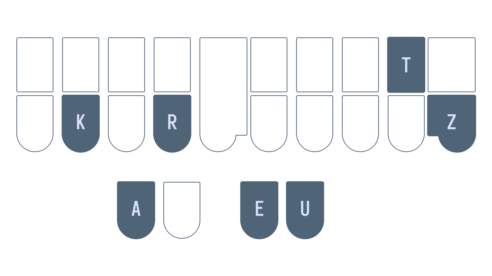
While some theories permit such a stroke by pressing the -T with your ring finger and the -Z with your pinkie finger, this is not a technique used in Lapwing theory. Therefore, we instead use the -S key: KRAEUTS.
Plover's steno engine and folded suffix keys
This technique of including a suffix key in the last stroke is "baked" into the English steno engine in Plover. If you try to write the stroke HAEPZ, you will find that it outputs "happies". However, this isn't actually defined in the Lapwing dictionary:
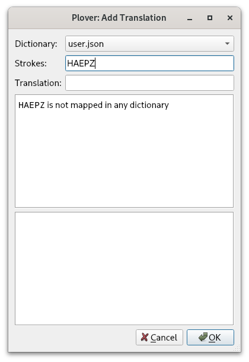
What's happening is that Plover recognizes that the outline HAEP is defined as "happy" (this is a Lapwing/Plover brief) and so tries to fold the -Z suffix key into the translation. Because of the orthography rules built into the English steno engine, Plover removes the ending "y" and adds "ies" to the translation.
This happens with all of the suffix keys—try out HAEPD, HAEPS, and HAEPG.
Should you use folding?
Using the Plover lookup tool, you can find a lot of entries with folded suffix keys. In fact, you won't find many entries where the suffix keys aren't folded into the previous stroke. Despite this, it is recommended that you do not fold suffix keys.
Folding only saves a minuscule amount of time as opposed to pressing the suffix key in a separate stroke. As this technique often requires more finger contortion, it may not even be faster in the end. Furthermore, folding can also lead to extra conflicts that are tricky to resolve.
Section practice
The A "prefix" key
While not nearly treated as specially as the suffix keys, the A key on its own is a prefix stroke. Contrary to other prefixes that should be used to modify a root word, this stroke can be used entirely on its own without any regard to the semantic meanings of the strokes.
Examples
- about
A/PWOUT - accretion
A/KRAOEGS - allow
A/HROU - amend
A/PHEPBD
Compound words
Compound words (more specifically, closed compound words) consist of two words joined together with nothing in between. To write these, asterisk the first stroke of the second word. If there is already an asterisk in this stroke, leave it as is.
Examples
- candlelight
KAPBD/-L/HRAO*EUT - grasshopper
TKPWRAS/HO*P/*ER - eyelash
AOEU/HRA*RB - teamwork
TAEPL/WO*RBG
Section practice
No test this chapter!
Chapter 15: Syllabic splitting
Recommended pace
Recommended time to spend on this chapter: 2–5 days.
- Read syllabic splitting basics and complete the drill (20 minutes)
- Repeat the drill as needed
- Read
KWRas a silent linker and complete the drill (20 minutes)- Repeat the drill as needed
- Read
KWRas y and complete the drill (20 minutes)- Repeat the drill as needed
- Read prefix priority (10 minutes)
- Attempt the test (20 minutes)
- Practise as needed
Remember to take breaks!
Useful links
Syllabic splitting basics
In earlier chapters, you learned when and how to use affix strokes. You also learned how to write compound words. Syllabic splitting is the last technique for writing multisyllable words that cannot be written in one stroke. The rules are fairly simple.
- Split the word using other methods (prefixes, suffixes, and compound words)—even just partially
- Split each remaining part by its syllables so that every stroke after the first begins with a consonant
- Make sure to not double consonants across separate strokes
- With multiple ways of splitting syllables, preserve the natural sounds of the word
It's best to learn these rules by examples.
Basic examples and explanations
components
-
We first notice that this word can be split into a root word and a suffix: component/s.
-
There are three possibilities for the first stroke: co/mponent/s, com/ponent/s and comp/onent/s. Take note of what the second stroke has to begin with in each of these scenarios (underlined letters).
-
The first scenario is not correct as the second stroke would have to start with "mp" (not a valid left hand consonant). The third scenario is also incorrect since the second stroke begins with a vowel. Only the second method is valid: com/ponent/s.
-
To split the remaining "ponent" group, we also remember that every stroke has to begin with a consonant. Remember that every stroke has to begin with a consonant. The only way to do this is by splitting it as: po/nent.
Full outline: KOPL/POE/TPHEPBT/-Z
shatterproof
-
This word is clearly a compound of "shatter" and "proof". Our last stroke should therefore be
PRAO*F. -
It wouldn't make sense to use a suffix stroke, so we use syllabic splitting.
-
If we want the second stroke to begin with a consonant, we must split this as: sha/tter.
Full outline: SHA/TER/PRAO*F
exam
-
There are no prefixes, suffixes, or compound words we can use here.
-
Since there is no consonant after the "x", we have to split the "x" across the two strokes.
Full outline: EBG/SAPL
Whenever "x" has to be split across two strokes, use -BG in the first stroke and S in the second.
simile
-
This word does not contain any prefixes, suffixes, and is not a compound word.
-
As each stroke cannot begin with a vowel, there is only one way to split this word: si/mi/le.
Full outline: SEU/PHEU/HRAOE
dependent
-
We can start by splitting this word into "depend" + "-ent"; thus, our last stroke is
KWREPBT. -
Since we cannot start any strokes with a vowel, there is only one way to split this: de/pend.
Full outline: TKE/PEPBD/KWREPBT
ally
-
There are no prefixes, suffixes, or compound words that can be used.
-
Split this in a way that every stroke begins with a consonant results in: a/lly
Full outline: A/HRAOEU
ludicrous
-
No prefixes, suffixes, or compound words are available to use.
-
We must start each stroke with with a consonant. The first stroke should therefore contain the first consonant and vowel: lu/dicrous.
-
There are two ways of splitting the rest of the word: lu/dic/rous and lu/di/crous.
-
The latter is more natural as the "cr" in "ludicrous" is pronounced as one sound.
Full outline: HRAOU/TKEU/KRUS
wrinkly
-
This can be split into wrinkl(e)/y with the
KWREUsuffix. -
The root word "wrinkle" should be written as
WR*EUPBG/-L.
Full outline: WR*EUPBG/-L/KWREU
efficient
-
No prefixes, suffixes, or compound words are available to use.
-
There is only one way to split this word so that every stroke begins with a consonant: e/ffi/cient
Full outline: AOE/TPEU/SHEPBT or E/TPEU/SHEPBT
More examples
- compromise
KOPL/PRO/PHAOEUSorKO*PL/RO/PHAOEUS - dispatcher
TKEUS/PAFP/*ER - hubris
HAOU/PWREUS - inadvertent
EUPB/AD/SRER/TEPBT - occasion
OE/KAEUGS - parliament
PAR/HRAPLT - reassured
RE/A/SHUR/-DorRAOE/A/SHUR/-D - sentiment
SEPB/TEUPLT - example
EBG/SA*PL/-L
Section practice
Basic syllabic splitting drill
KWR as a silent linker
Sometimes it is not possible to start a stroke with a consonant as you may run out of consonants in a word. In these cases, use KWR as a silent linker chord to join a stroke to the previous.
KWR with the -R key
In single syllable words, the inclusion of the -R key can sometimes change the pronunciation of the vowel.
In the list below, notice how each pair of words has a different vowel sound due to the presence of the -R key.
- car
KAR - cat
KAT - pay
PAEU - pair
PAEUR - cue
KAOU - cure
KAOUR - hem
HEPL - her
HER
In multistroke words, we also treat -R as a quasi-vowel key when appropriate.
For example, the word "carry" would be written in two strokes. As we must preserve the vowel sound, we have to include the -R key in the first stroke: KAEUR. To start the next stroke, we cannot repeat the "r" consonant by using the left hand R key, so we use KWR as a silent linker.
Examples
- carry
KAEUR/KWREU - fury
TPAOUR/KWREU - hurry
HUR/KWREU - berry
PWER/KWREU
Why the EU chord?
The examples above all end in the "long e" sound (/i/) as in "tee"—so why EU? Well, to be quite honest, I'm not entirely sure myself. This is simply what Plover theory sometimes does and it's just what I've gotten used to. This does, unfortunately, mean that Lapwing theory has inherited the quirk.
That being said, the usage of EU vs AOE is more defined in Lapwing theory and is less arbitrary. If a word has a "long e" sound, these are the rules you should follow for deciding between EU and AOE:
- If the vowel is spelled with a single "i", use
EU- petite
PE/TEUT - ski
SKEU
- petite
- If the vowel is spelled with "ey" or "y", use
EU- city
SEU/TEU - key
KEU
- city
- If
EUis already taken by another word, useAOE- marine
PHAR/KWRAOEPB(sincePHAR/KWREUPBis marin)
- marine
- In all other situations, use
AOEorAEas previously covered- cookie
KAO/KAOE - spleen
SPHRAOEPB - here
HAOER - hear
HAER
- cookie
Prefix vowel exceptions
The stroke after a prefix may start with a vowel if needed. However, you must use this prefix stroke appropriately; it should modify a root word that can exist on its own.
Examples
KOE/OR/TKEU/TPHAEUTcoordinateEUPB/AOE/KWAULinequalPRAOE/OR/TKAEUPBpreordainUPB/A/TAEUPB/-BLunattainable
Section practice
KWR as a silent consonant drill
KWR as "y"
To start a vowel
We've learned that KWR* is the beginning "y" consonant, but within multisyllable words, KWR itself can represent "y" as well.
For completeness, here is a table listing the different situations involving the "y" sound:
| Situation | Appropriate chord | Example | Example outline |
|---|---|---|---|
| Word begins with "y" | KWR* | yell | KWR*EL |
| Word begins with "y" sound (not spelled) | | use | AOUS |
| "y" sound within a word | KWR | union | AOUPB/KWROPB |
In the three situations above, only the last one should be new to you.
Examples
- bunion
PWUPB/KWROPB - opinion
OE/PEUPB/KWROPB - onion
OPB/KWROPB - trunnion
TRUPB/KWROPB
Between two vowels
The KWR chord can also represent the "y" sound that occurs between two vowels. In my accent, the words "piano" or "aioli" have a subtle "y" sound in the second syllable ("pee-ya-no" and "ai-yo-lee").
Linguistically, this sound is called a glide and is represented with KWR in Lapwing:
- piano
PEU/KWRA/TPHOE - aioli
AOEU/KWROE/HREU
If, in your accent, you cannot hear a glide, you can also just treat KWR as a silent linker just like in previous sections.
Essentially, if there are two distinct vowel sounds next to each other which cannot be represented by a single vowel chord, use KWR to link them in separate strokes.
Examples
KAEU/KWROSchaosTKAOEU/KWRA/KREU/TEUBGdiacriticAOEU/TKAOE/KWRAideaSRAOEU/KWROLTviolet
As a vowel pair
How would you write the word "alleviate"? With everything we've learned so far, you may be tempted to use A/HRAOE/SREU/KWRAEUT (a/lle/vi/ate). However, four strokes is quite a lot. We need to be able to compress this word into fewer strokes if we want to be fast at steno.
To do this, we can let the KWRAEU stroke represent the entire "ia" sound. This sound is made up of two distinct vowels that are blended together. The "ia" pair is composed of the "long e" /i/ vowel as in "beet" and the "long a" /ei/ vowel as in "bait". These are blended together to form the sound "ee-ait" /iˌeɪt/.
Say "alleviate" out loud and see if you can identify this "ee-ait" vowel pair in the last syllable!
Instead of treating KWR as a silent linker chord, we can also treat it to represent the first vowel sound in this pair. We would write the second sound with the thumb keys. This way, we can let KWRAEU represent the "ia" sound. By doing so, we have effectively shifted where the last stroke begins: we went from a/lle/vi/ate to a/lle/v/iate
Finally, if we move the "v" sound to the second stroke , we can split this word in only three strokes: a/llev/iate
- alleviate
A/HRAOEF/KWRAEUT
Another way of thinking about this is that KWR is representing a subtle "y" sound just like in the previous section. If you can hear a "y" sound in alleviate (as in "a-leev-yait"), then you can simply use KWR to represent this sound, and write the rest of the vowels using the thumbs.
Thinking about vowel pairs is a great way of understanding how KWR can be used in these situations. However, if it is a bit slow, I recommend thinking about KWR as a "y" sound. We can approximate complicated vowel sounds just by using a "y" sound and a vowel we've learned before.
Examples
In the following examples, try to pronounce each word by approximating the vowel pair with a "y" sound. Notice how these approximations still resemble the word being pronounced.
- appreciate
A/PRAOERB/KWRAEUTKWRAEUrepresents "ia" vowel pair
- aficionado
A/TPEURB/KWRO/TPHA/TKOEKWROrepresents "io" vowel pair
- nefarious
TPHE/TPAEUR/KWRUSKWRUrepresents the "iou" vowel (the "o" is silent)
- video
SREUD/KWROEKWROErepresents the "eo" vowel
Section practice
Prefix priority
Sometimes a given steno outline can have both a word and a prefix that it can represent. For example, to write the simple word "by" you may want to use PWAOEU. However, there also exists the "bi-" prefix as in the words "bicycle" PWAOEU/SAOEUBG/-L, "bifurcate" PWAOEU/TPUR/KAEUT, and "bilateral" PWAOEU/HRA/TER/KWRAL. From a prefix perspective, these are not used correctly since the prefixes are not altering a root word semantically. However, from a syllabic splitting perspective, these are correct.
Therefore, it makes sense to assign a different stroke other than PWAOEU to the word "by". Otherwise, you may lead to conflicts like:
PWAOEU/SAOEUBG/-L/-G- Can be the word "bicycling"
- Can be the phrase "by cycling" as in "We can achieve hover by cycling between engine modes."
PWAOEU/HRA/TER/KWRAL- The word "bilateral"
- Can be the phrase "by lateral" as in "Love waves cause damage by lateral movement of the ground."
Below is a table of some basic word/prefix conflicts. Prefixes will be given to the intuitive outline and the word variant will use the asterisk key or a different vowel chord. However, for some common words, it's useful to brief them as it is useful in phrases. You are free to add your own briefs for the word variants.
| Prefix/word | Prefix Outline | Recommended word outline(s) | Explanation |
|---|---|---|---|
| a | A | AEU | A* is already used. |
| bi- (by) | PWAOEU | PWEU | There is a three way conflict between "by", "bye", and "buy" (see below). |
| be | PWE | -B | Useful in phrase briefs. |
| for | TPOR | TP-R or TPAURT | Useful in phrases like "for the" TP-RT. |
| in | EUPB | TPH | Useful in phrases like "in the" TPH-T. |
| or | OR | AOUR or AUR | O*R is already used. |
| out | OUT | O*UT or AOUT | Either works. |
| on | OPB | O*PB or AUPB | Either works. |
| tri- (try) | TRAOEU | TRAO*EU or TREU | The first is the more "formal" outline, but the second matches the pattern with "by". |
Multistroke prefixes
There are also conflicts between words and prefixes that are more than one stroke long. In these cases, the rules are much more simple. Use the asterisk key on the last stroke of the outline to write the word variant, and no asterisk to write the prefix.
| Prefix/word | Prefix Outline | Word Outline |
|---|---|---|
| auto | AU/TOE | AU/TO*E |
| intro | EUPB/TROE | EUPB/TRO*E |
| over | OE/SRER | OE/SR*ER |
| under | UPB/TKER | UPB/TK*ER |
Some of these can also be briefed. Feel free to use the look up and discover briefs.
Three way conflict between "by", "bye", and "buy":
| Word | Outline |
|---|---|
| by | PWEU |
| bye | PW*EU |
| buy | PWAO*EU |
Again, feel free to change around these outlines.
Next chapter
Don't worry too much about trying to memorize these briefs just yet. It's just important that you understand the motivation as to why some basic words aren't very intuitive. These briefs (along with others) are covered in the next chapter with practice material.
Chapter 15 test
This chapter's test consists of all the practice drills you have done in this chapter. Make sure your settings are configured as such:
- Limit word count: 45
- Start from word: 1
- Repetitions: 3
- Sort: random
- Show hint for every word: unchecked
- Hide hint on last repetition: unchecked
- Show hint on misstroke: checked
Click here to access the chapter 15 test
Recommended completion goal
This is only a suggestion; it is not a requirement to move to the next chapter!
Aim for 10–40 WPM with 90% accuracy.
You may use the test material as practice!
Chapter 16: Top 200 common English words
Recommended pace
Recommended time to spend on this chapter: 2 days.
- Read the introduction (5 minutes)
- Skim the rest of this page (10 minutes)
- Attempt the test (20 minutes)
- Practise as needed
Remember to take breaks!
Useful links
Introduction
In English, the 200 most frequently used words account for something like 80% of all writing. Because of this, these words tend to be briefed heavily for speed and comfort. About a third of the top 200 English words are briefed in Lapwing theory and cannot be written using theory principles. By the end of this chapter, you should be comfortable writing all of these words.
Write-outs versus briefs
A write-out refers to an outline that adheres to theory principles very closely. They are the "canonical" outline you would use if you have never written the word before. On the other hand, a brief is an outline that doesn't necessarily follow theory. It is an abbreviated entry that is used for greater speed.
Some words do not have a write-out entry and will only have a brief which needs to be memorized. On the other hand, some words may only have a write-out. Finally, some may also have a brief and a write-out. If no explanation is provided, you may use either one.
NOTE: you may find other briefs in the dictionary that are not mentioned in this page. I recommend not using them until you are done theory and are comfortable with your dictionary.
How to complete this chapter
It would be extremely hard to memorize many of these briefs just by reading this page. Instead, first skim through this page and then use Typey Type to discover new words. Use these settings:

- Study type: Discover
- Limit word count: 200
- Repetitions: 1
- Sort: Random
- Hide hint on last repetition: unchecked
This way, you can learn the words by simply reading the hints provided. If you come across a brief that is confusing, check back on this page to see if there is an explanation.
Practice material
1–50
the
Brief: -T
of
Brief: -F
to
Brief: TO
Write-out: TAOU
Both outlines are valid to use.
and
Brief: SKP
Useful in phrases such as SKP-T "and the" and SKPU "and you".
a
Write-out: AEU
A is the "a-" prefix.
in
Brief: TPH
EUPB is the "in-" prefix.
is
Brief: S
it
Brief: T
you
Brief: U
that
Brief: THA
Useful in phrases such as THAT "that the" and THAEU "that I".
he
Write-out: HAOE
was
Write-out: WAS
for
Brief: TP-R
TPOR is the "for-" prefix.
on
Brief: AUPB or O*PB
OPB is the "on-" prefix.
are
Brief: R or -R
Useful in phrases such as R-T "are the" and THR-R "there are" (see there).
with
Brief: W
Useful in phrases such as W-T "with the" and WU "with you" (see you).
as
Write-out: AS
I
Brief: EU
AOEU is the word "eye".
his
Write-out: HEUS
they
Brief: THE
Useful for dealing with the "their", "there", and "they're" three-way conflict as "they're" can be written as THER.
be
Brief: -B
PWE is the "be-" prefix and PWAOE is the word "bee".
at
Write-out: AT
one
Write-out: WUPB
have
Brief: SR
Useful in phrases like SR-T "have the" and SRU "have you". HAF is also the word "half".
this
Brief: TH
Useful in phrases like STH "is this" and TH-S "this is".
from
Write-out: TPROPL
or
Brief: AOUR or AUR
OR is the "or-" prefix.
had
Brief: H
by
Brief: PWEU
PWAOEU is the "bi-" prefix.
hot
Write-out: HOT
but
Write-out: PWUT
some
Write-out: SOPL
what
Brief: WHA
Useful in phrases like WHAT "what the" and WHAEU "what I".
there
Brief: THR
Useful in phrases like THR-R "there are" and THR-S "there is".
we
Write-out: WAOE
To write the word "wee", use WAO*E.
can
Brief: K
out
Brief: AOUT or O*UT
OUT is the "out-" prefix.
other
Brief: OER
Write-out: O*T/KWRER
The brief is recommended for this common word.
were
Brief: WR
Write-out: WER
The brief is useful in phrases such as WR-T "were the" and WRU "were you".
all
Write-out: AUL
your
Brief: KWRAOUR or KWROR or KWROUR
Write-out: KWRAO*UR
The write-out is somewhat awkward so it is recommended you use one of the briefs.
when
Brief: WH
Useful in phrases such as WH-S "when is" and WHU "when you".
up
Write-out: UP
use
Write-out: AOUS
word
Write-out: WORD
how
Write-out: HOU
said
Brief: SED
The awkward spelling of this word makes a write-out impractical.
an
Write-out: APB
each
Write-out: AOEFP
she
Write-out: SHAOE
51–100
which
Brief: WEU or KH
WEUFP and WHEUFP are the words "witch" and "whisp".
do
Brief: TKO
TKAOU and TKAO*U are the words "due" and "dew".
their
Write-out: THAEUR
time
Write-out: TAOEUPL
if
Brief: TP
Useful in phrases like TPU "if you" and TP-T "if the".
will
Brief: HR
Useful in phrases like HRU "will you" and HR-T "will the".
way
Write-out: WAEU
about
Brief: PW
many
Brief: PHA*EPB
then
Write-out: THEPB
them
Write-out: THEPL
would
Write-out: WUD
write
Write-out: WRAOEUT
like
Write-out: HRAOEUBG
so
Brief: SO
SOE is the word "sow".
these
Write-out: THAOES
her
Write-out: HER
long
Write-out: HROPBG
make
Write-out: PHAEUBG
thing
Write-out: THEUPBG
see
Write-out: SAOE
him
Write-out: HEUPL
two
Brief: TWO
has
Write-out: HAS
look
Write-out: HRAOBG
more
Write-out: PHOR
day
Write-out: TKAEU
could
Write-out: KUD
go
Write-out: TKPWOE
come
Write-out: KOPL
did
Brief: TK
Useful in phrases like TK-T "did the" and TKU "did you".
my
Write-out: PHAOEU
sound
Write-out: SOUPBD
no
Brief: TPHO
TPHOE is the word "know".
most
Write-out: PHOEFT
number
Write-out: TPHUPL/PWER
who
Brief: WHO
WHAOU is the word "whew".
over
Write-out: OE/SRER
know
Write-out: TPHOE
water
Write-out: WAU/TER
than
Write-out: THAPB
call
Write-out: KAUL
first
Brief: TPEUFRT
Write-out: TP*EURS
TPEUFRT uses an inversion (violation of steno order) which is more of a briefing technique than a theory rule.
people
Brief: P
Write-out: PAOEPL
may
Brief: PHAEU
down
Write-out: TKOUPB
side
Write-out: SAOEUD
been
Brief: PW-PB
now
Write-out: TPHOU
find
Write-out: TPAOEUPBD
101–150
any
Brief: TPHEU
new
Brief: TPHU
TPHAOU is the word "knew"
work
Write-out: WORBG
part
Write-out: PART
take
Write-out: TAEUBG
get
Write-out: TKPWET
place
Write-out: PHRAEUS
made
Write-out: PHAED
live
Write-out: HREUF
where
Brief: W-R
Write-out: WHER
after
Brief: AF or AFR
Write-out: AF/TER
back
Write-out: PWABG
little
Brief: HREUL
Write-out: HREUT/-L
only
Brief: OEPBL
Write-out: OEPB/HREU
round
Write-out: ROUPBD
man
Write-out: PHAPB
year
Write-out: KWRAO*ER
came
Write-out: KAEUPL
show
Write-out: SHOE
every
Brief: EFR
good
Write-out: TKPWAOD
me
Write-out: PHAOE
give
Write-out: TKPWEUF
our
Write-out: OUR
under
Brief: TPH-PB or UPBD
Write-out: UPB/TK*ER
UPB/TKER is the "under-" prefix.
name
Write-out: TPHAEUPL
very
Brief: SRE
Write-out: SRER/KWREU
through
Brief: THRU
THRAOU is the word "threw".
just
Write-out: SKWRUFT
form
Write-out: TPORPL
much
Write-out: PHUFP
great
Write-out: TKPWRAET
think
Brief: THEU
Write-out: TH*EUPBG
If you're having trouble with the awkward write-out, use the brief instead.
say
Write-out: SAEU
help
Brief: HEP
Write-out: HEL/-P
low
Write-out: HROE
line
Write-out: HRAOEUPB
before
Brief: PW-FR
Write-out: PWE/TPOR
turn
Write-out: TURPB
cause
Write-out: KAUS
same
Write-out: SAEUPL
mean
Write-out: PHAOEPB
differ
Brief: TKEUFR
Write-out: TKEU/TPER
move
Write-out: PHAOUF
right
Write-out: RAOEUT
boy
Write-out: PWOEU
old
Write-out: OELD
too
Write-out: TAO
does
Write-out: TKOS
tell
Write-out: TEL
151–200
sentence
Brief: STEPBS
Write-out: SEPB/TEPBS
set
Write-out: SET
three
Write-out: THRAOE
want
Write-out: WAPBT
air
Write-out: AEUR
well
Write-out: WEL
also
Brief: HR-S
play
Write-out: PHRAEU
small
Write-out: SPHAUL
end
Write-out: EPBD
put
Write-out: PUT
home
Write-out: HOEPL
read
Write-out: RAED
hand
Write-out: HAPBD
port
Write-out: PORT
large
Write-out: HRARPBLG
spell
Write-out: SPEL
add
Write-out: AD
even
Brief: AOEFPB
land
Write-out: HRAPBD
here
Write-out: HAOER
must
Write-out: PHUFT
big
Write-out: PWEUG
high
Write-out: HAOEU
such
Write-out: SUFP
follow
Brief: TPOL
Write-out: TPO/HROE
act
Write-out: ABGT
why
Brief: KWR
Useful in phrases such as KWR-R "why are" and KWR-T "why the"
ask
Brief: SK
Write-out: AFBG
men
Write-out: PHEPB
change
Write-out: KHAEUPBG
went
Write-out: WEPBT
light
Write-out: HRAOEUT
If you feel that "lite" should be written HRAOEUT, feel free to swap these around. However, "lite" is quite a bit more uncommon that I feel it should be given the asterisk.
kind
Write-out: KAOEUPBD
off
Write-out: OF
need
Write-out: TPHAOED
house
Write-out: HOUS
picture
**Brief: P*EUFP **
Write-out: PEUBG/KHUR
try
Brief: TREU
TRAOEU is the "tri-" prefix.
us
Write-out: US
again
Brief: TKPWEPB
Write-out: A/TKPWEPB or A/TKPWAEUPB
Just like with said, the spelling of this word makes a write-out entry ambiguous and slightly impractical.
animal
Brief: PHAPBL or APB/PHAL
Write-out: A/TPHEU/PHAL
The one-stroke brief completely violates steno order. The two-stroke brief drops the "i" vowel as it is unstressed (unemphasized).
point
Write-out: POEUPBT
mother
Brief: PHOER
Write-out: PHO/THER
world
Write-out: WORLD
near
Write-out: TPHAOER
build
Write-out: PWEULD
self
Brief: SEFL
Write-out: SEL/*F
Remember to use *F when ending a word with the "f" sound.
earth
Write-out: *ERT
father
Brief: TPA*URT
Write-out: TPAU/THER
Chapter 16 test
This chapter's test consists of the words listed on this page. Use the following settings:
- Limit word count: 45
- Start from word: 1
- Repetitions: 3
- Sort: random
- Show hint for every word: unchecked
- Hide hint on last repetition: unchecked
- Show hint on misstroke: checked
Click here to access the chapter 16 test
Recommended completion goal
This is only a suggestion; it is not a requirement to move to the next chapter!
Aim for 10–40 WPM with 90% accuracy.
You may use the test material as practice!
Chapter 17: Fingerspelling and numbers
Recommended pace
Recommended time to spend on this chapter: 1 day.
- Read fingerspelling (10 minutes)
- Read numbers (10 minutes)
Remember to take breaks!
Useful links
Intro
There won't be any practice material for this chapter as these topics are easy to practise just by using steno in everyday writing. I would, however, recommend printing out these graphics and keeping them somewhere easily read.
Fingerspelling
If you need to write a short acronym or a word that is not in your dictionary, you need to fallback onto letter-by-letter spelling—a technique called fingerspelling. This is done by pressing letter chord plus the asterisk key with the right hand.
Lowercase

Uppercase
To write uppercase letters, use -P on the right hand.

Attachment behaviour
Fingerspelling uses "glue" formatting. These translations stick to other translations which use the "glue formatting". If you last wrote a word without the "glue" formatting, pressing a fingerspelling chord would create a new word. However, any subsequent fingerspelling chords would stick to the last fingerspelled translation.
Examples
A*/PW*/KR*abcHE/HROE/A*/PW*/KR*/HE/HROEhello abc hello
Numbers
Up until now, we have never used the number key above the left hand S key. This key is (shockingly) used for writing numbers (among other things). On the right hand, we use a numberpad much like traditional computer numberpads or the ones you find on calculators.
There are, of course, only two rows on the steno layout, so we use vertical chords to represent the middle row.

The right hand vowel keys are special in that they can be combined with a number chord to add some trailing zeros:
#ER10#EUPB5000#UP800#EB20
Attachment behaviour
Numbers use the same "glue" formatting that stick to other translations which are formatted similarly. This means that numbers will stick to fingerspelled translations and other numbers. If you don't want this "glue" behaviour, you can use #T in the chord.
Examples
A*/PW*/KR*/#-R/#-B/#-Gabc123A*/PW*/KR*/#T-R/#T-B/#T-Gabc 1 2 3
No test this chapter!
Chapter 18: Proper nouns
Recommended pace
Recommended time to spend on this chapter: <1 day.
- Read proper nouns (10 minutes)
Remember to take breaks!
Proper nouns
You may be wondering how to write proper nouns with Lapwing theory. So far, the drills have not included any proper nouns at all. This is because they can sometimes conflict with other words (for example, "mat", "math", "Mat", and "Matt").
Lapwing uses the number key to help get around this issue. Proper nouns are written exactly the same as regular words, with one exception: the first stroke includes the # key.
Examples
#A/TPHAAnna#KAL/TKPWAR/KWREUCalgary#PHATMat#SRAPB/KAOU/SRER/AOEU/HRAPBDVancouver Island
Proper nouns starting with "j"
#SKWR is a really hard chord to press, especially when writing at speed. #STKPW is an alternative chord for proper nouns starting with "j".
#STKPWER/PHA/TPHEUGermany#STKPWO/TPHO/THAPBJonathan
Alternative proper nouns with a prefix stroke
Some machines may not be compatible with remapping the top S- key. In this case, you can instead use # as a stroke on its own to prefix proper nouns. This is handled through the lapwing-prefixed-proper-nouns.json dictionary. If you do not need this functionality, you can safely remove this from your dictionary stack.
Examples
#/KEFPBKevin#/PATPat
No test this chapter!
Chapter 19: Punctuation and Commands
Recommended pace
Recommended time to spend on this chapter: 1 day.
- Read punctuation (10 minutes)
- Read commands (10 minutes)
Remember to take breaks!
Useful links
Intro
In this chapter, we will look at punctuation and Plover commands which tend to be less intuitive. You will have to simply memorize many of these. There won't be any practice material for this chapter; instead, I encourage you to start using steno whenever you can and refer back to this page whenever you need to. This would also be a great time to start playing typing games like TypeRacer or Monkeytype if you are interested in that.
Punctuation
You should be familiar with how regular words in Plover are written with spaces in between them (apart from special translations). For punctuation, however, you do not necessarily want to have a space on either side of the symbol. Thus, each punctuation outline has its own special formatting.
By default, every translation will have a space on either side—it won't be attached to the previous or the next word. Every translation also won't affect the capitalization of the next word. In the table below, the formatting specifies where each translation differs from default formatting.
| Character | Name | Formatting | Steno outline | Mnemonic |
|---|---|---|---|---|
. | Period | Attaches to the previous word and capitalizes the next word. | TP-PL | Written by the top index and middle finger on both hands. |
? | Question mark | Attaches to the previous word and capitalizes the next word. | KW-PL | This is like the outline for a period, but the shape resembles a rising intonation as would happen in a question. |
! | Exclamation mark | Attaches to the previous word and capitalizes the next word. | TP-BG | This is like the period outline, but sloped downwards to mirror the question mark outline. |
. | Decimal point | Attaches to the previous word and the next word. | P-P | This is like the period outline but is only pressed with the middle fingers. |
, | Comma | Attaches to the previous word. | KW-BG | This is similar to the period outline, but is on the bottom row. |
" | Opening quotation mark | Attaches to the next word. | KW-GS | Think of the outline as "quotation". |
" | Closing quotation mark | Attaches to the previous word. | KW*GS | This is the opening quotation mark outline with the asterisk. |
` | Opening backtick | Attaches to the next word. | KH-FG | This outline is symmetrical and the right hand makes a shape that resembles a backtick. |
` | Closing backtick | Attaches to the previous word. | KH*FG | This is the opening backtick outline with the asterisk. |
( | Opening parenthesis | Attaches to the next word. | PREPB | This outline makes the sound "pren" as in parenthesis |
) | Closing parenthesis | Attaches to the previous word | PR*EPB | This is the opening parenthesis outline with the asterisk. |
{ | Opening curly brace | Attaches to the next word. | TPR-BGT | This symbol is also called a "French bracket" (hence the outline). |
} | Closing curly brace | Attaches to the previous word. | TPR*BGT | This is the opening curly brace outline with the asterisk. |
[ | Opening square bracket | Attaches to the next word. | PWR-BGT | This outline resembles "bracket". |
] | Closing square bracket | Attaches to the previous word. | PWR*BGT | This is the opening square bracket outline with the asterisk. |
: | Colon (for writing) | Attaches to the previous word | STPH-FPLT | This outline uses the top row of keys apart from the S |
; | Semicolon | Attaches to the previous word. | STPH*FPLT | This is the colon outline but with the asterisk. |
: | Colon (for time) | Attaches to the previous word and the next word. | KHR-PB | This outline resembles the word "colon". |
— | Emdash | Attaches to the previous word and the next word. | PH-RB | This outline sort of resembles "emdash". |
– | Endash | Attaches to the previous word and the next word. | TPH-RB | This outline sort of resembles "endash". |
- | Hyphen | Attaches to the previous word and the next word. | H-PB | This outline resembles "hyphen". |
‽ | Interrobang | Attaches to the previous word and capitalizes the next word | TRAPBG | This outline resembles the word "interrobang". |
/ | Slash | Attaches to the previous word and the next word | OEU |

Commands
Quite often, you might have to manually tell Plover to format a word a certain way.
Insert a space
Outline: S-P
Mnemonic: space
Although Plover will automatically insert spaces before regular words, sometimes you might have to explicitly tell Plover to insert a space so that two strokes should not be interpreted as a multistroke outline.
For example, KOR/TPHET is the word "cornet" in the Lapwing dictionary, but this makes it impossible to write the phrase "core net". Instead, we use the "insert space" command in between the two strokes:
KOR/S-P/TPHET → core net
Retroactively insert a space
Outline: S-PD
Mnemonic: the S-P outline but with -D to indicate the retro command
This outline will insert a space before the last stroke.
KOR/TPHET/S-PD → core net
NOTE: this doesn't work with multistroke outlines.
For example, you cannot use this technique to write the phrase "core nettle". What's happening is that when you write KOR/TPHET/S-PD/-L, Plover interprets the second word as TPHET/S-PD/-L which, of course, isn't defined in the dictionary.
Suppress the next space
Outline: SP-S
Mnemonic: suppress space
Example:
HOU/SP-S/-FR → however
Retroactively suppress the last space
Outline: SP-LS
Mnemonic: suppress last space
Example:
PHOR/AUFR/SP-LS → moreover
Capitalize the next word
Outline: KPA
Mnemonic: the word "cap" but with the "a" and "p" out of order
Example:
-T/KPA/AOEU/HRAPBD → the Island
Retroactively capitalize the next word
Outline: KA*PD
Mnemonic: the word "capped" but with the asterisk
Example:
-T/AOEU/HRAPBD/KA*PD → the Island
Capitalize the next word and suppress the next space
Outline: KPA*
Mnemonic: the KPA outline with the asterisk
This is useful for starting a new sentence.
Uncapitalize the next word
Outline: HRO*ER
Mnemonic: the word "lower" but with the asterisk
Retroactively uncapitalize the next word
Outline: HRO*ERD
Mnemonic: the HRO*ER outline but with -D to indicate the retro command.
No test this chapter!
Chapter 20: UK spellings
Recommended pace
Recommended time to spend on this chapter: <1 day.
Remember to take breaks!
Intro
Lapwing theory is very North American centred as that is the dialect of English I am familiar with. However, being from Canada, I often need to use both American and British spellings of words in writing. I've created a dictionary that adds in British spellings with alternative outlines. Unfortunately, this dictionary does not account for pronunciation differences, and it also prioritises the American forms of words—there may not always be short briefs available for British spellings.
Ideally, there would be a separate stand-alone lapwing dictionary for British English, but creating one would be very difficult, particularly for someone who does not speak this dialect. If you would like to contribute a lapwing dictionary for British speakers, please do get in touch!
Setup
Make sure you are using the plover-lapwing-aio plugin, or you have manually configured your dictionary stack by following these instructions.
Quick switching
The recommended way to switch from an American word to its British form is by using #TPH as a suffix stroke of sorts. This is guaranteed to always work unlike the other methods outlined later.
Examples
- center
SEPB/TER- centre
SEPB/TER/#TPH
- centre
- fulfill
TPUL/TPEUL- fulfil
TPUL/TPEUL/#TPH
- fulfil
- harbor
HAR/PWOR- harbour
HAR/PWOR/#TPH
- harbour
- organize
OR/TKPWA/TPHAOEUZ- organise
OR/TKPWA/TPHAOEUZ/#TPH
- organise
Dealing with suffixes
If you are writing a word with a suffix, you have to switch the word into its British form first before writing the suffix.
Examples
- organising
OR/TKPWA/TPHAOEUZ/#TPH/-G - economises
AOE/KO/TPHO/PHAOEUZ/#TPH/-Z - energiser
EPB/KWRER/SKWRAOEUZ/#TPH/*ER - immortalised
EUPL/PHOR/TAL/KWRAOEUZ/#TPH/-D
ae spellings
Regardless of pronunciation, words that are spelled with "ae" can be written with AE.
Examples
- aetiology
AET/KWROLG - encyclopaedia
EPB/SAOEU/KHROE/PAE/TKEU/KWRA - haemoglobin
HAE/PHOE/TKPWHROE/PWEUPB - leukaemia
HRAOU/KAEPL/KWRA
ise spellings
Words spelled with "ise" can be written by using -S instead of -Z.
- magnetise
PHAG/PHE/TAOEUS - stabiliser
STAEUBL/KWRAOEUS/*ER - utilising
AOUT/HRAOEUS/-G - initialise
EUPB/KWREURBL/KWRAOEUS
oe spellings
Words spelled with "oe" can be written using OE regardless of pronunciation.
Examples
- oedema
OE/TKE/PHA - foetus
TPOE/TUS - homoeopathy
HOEPL/KWROE/PATH/KWREU - oestrogen
OES/TROE/SKWREPB
ou spellings
Words spelled with "ou" can be written using OU only to disambiguate between British and American spellings.
Examples
- candour
KAPB/TKOUR - colour
KO/HROUR - favour
TPAEU/SROUR - neighbour
TPHAEU/PWOUR
re spellings
For British words spelled with "re" you can use the asterisk key in the stroke containing ER.
Examples
- calibre
KA/HREU/PW*ER - litre
HREU/T*ER - mitre
PHAOEU/T*ER - centimetre
SEPB/TEU/PHAO*ERT
Miscellaneous briefs
If adding the asterisk into a brief or other outline exists, then chances are it will work for the British spelling.
Examples
- metre
PHAO*ERT - organise
O*RG - neighbour
TPHA*EURB
No test this chapter!
Chapter 21: Theory principles wrap-up
Intro
This page serves as a reference for all the miscellaneous theory principles that only apply to a few words. It's not important to explicitly memorize the content on this page as you will likely encounter these situations in everyday writing.
When you do find odd entries via the lookup tool, first consult this page. If you cannot find an explanation, free to contact me on Discord (@aerbg). It may be that I have not yet documented the oddity here or that the entry itself may be incorrect.
Acronyms
For capitalized acronyms, Lapwing treats these as regular words for the most part. Write the first stroke with the asterisk and the number key, but continue the rest of the acronym with regular theory rules, although, it is generally okay to break steno order. Usually writing an acronym involves spelling the letters it is made up of. For short acronyms, it can also be faster to fingerspell.
- AWOL
#A*EU/WOL - LAN
#HRA*PB - PDF
#P*FD
Contractions
Contractions are written with theory rules, but use the asterisk key.
Here are some common contractions.
| Contraction | Outline |
|---|---|
| he's | HAO*ES |
| he'll | HAO*EL |
| we're | WAO*ER |
| who's | WHO*S |
Some contractions that are based off of common words that are briefed in Lapwing are written a bit less intuitively:
| Contraction | Outline |
|---|---|
| what's | WHA*S |
| that's | THA*S |
-RB for "-rb" vs "-sh"
Sometimes it can be ambiguous whether -RB represents "-rb" or "-sh" as in the following pair of words:
- cash
- carb
In these cases, "-sh" gets precedence and the word with "-rb" is instead asterisked.
Disambiguating "ou" with OU
Plover's main.json uses OU for many words that are spelled with "ou" (especially when there is a conflict). For example, KORS would be the word "cores" and therefore "course" would have to be KOURS. Lapwing doesn't use this technique; it's preferred that you use O as much as possible and OU only when it's absolutely necessary.
These are the following such cases to memorize or at least note:
TPORis already used so "four" isTPOURorTPO*R.KWROURexists for "your" as a brief.- The word "tour" can only be written as
TAOUReven if that is not how you pronounce it (myself included). - Similarly, the word "mourn" can only be written as
PHAOURPB. - The word "soul" can be written
SO*ELorSOUL.
W for glides
For some words, using W for a glide might be closer phonetically:
EBG/WEU/TEUequityEBGS/TEUPBG/WEURBextinguishEUPB/TAOU/WEU/TEUFintuitiveAOU/PWEUBG/WEU/TEUubiquity
"-graph" words
"-graph"
Write the first part as if it is its own standalone word and then use TKPWRAF to write the "-graph" part separately:
AU/TOE/TKPWRAFautographPAEUR/KWRA/TKPWRAFparagraphPHEUPL/KWROE/TKPWRAFmimeographTE/HRE/TKPWRAFtelegraph
"-graphy"
Write the "-graph" part separately and then use the KWREU suffix to add the "-y":
SKWRAOE/KWRO/TKPWRAF/KWREUgeographyOR/THO/TKPWRAF/KWREUorthographySTE/TPHO/TKPWRAF/KWREUstenographySREUD/KWRO/TKPWRAF/KWREUvideography
Alternative "-graphy" outline
Instead of TKPWRAF/KWREU, you can also use TKPWRAEF:
SKWRAOE/KWRO/TKPWRAEFgeographyOR/THO/TKPWRAEForthographySTE/TPHO/TKPWRAEFstenographySREUD/KWRO/TKPWRAEFvideography
This uses a briefing technique called "E-folding" where the E key represents another vowel and is "tucked" into a steno stroke. In this case, the E represents the "long e" sound. Often, this extra sound is phonetically at the end of the word. This is an example of when steno order can be violated in briefs.
E-folding is covered further in chapter 24
"-grapher"
Write the "-graph" part separately and then use the *ER suffix to add the "-er":
KAR/TO/TKPWRAF/*ERcartographerKHOR/KWRO/TKPWRAF/*ERchoreographerHREBG/SEU/KO/TKPWRAF/*ERlexicographerOEGS/KWRO/TKPWRAF/*ERoceanographer
Alternative "-grapher" outline
Instead of TKPWRAF/*ER, you can also use TKPWRAFR:
KAR/TO/TKPWRAFRcartographerKHOR/KWRO/TKPWRAFRchoreographerHREBG/SEU/KO/TKPWRAFRlexicographerOEGS/KWRO/TKPWRAFRoceanographer
This uses a briefing technique where -FR can represent the "fer" sound.
"-graphic"
Write the "-graph" part separately and then use the KWREUBG suffix to add the "-ic":
*ET/TPHOE/TKPWRAF/KWREUBGethnographicHO/HRO/TKPWRA*F/KWREUBGholographicEUPB/TPOE/TKPWRAF/KWREUBGinfographicPEUBG/TO/TKPWRAF/KWREUBGpictographic
Alternative "-graphic" outline
Instead of TKPWRAF/KWREUBG, you can also use TKPWRAFBG:
*ET/TPHOE/TKPWRAFBGethnographicHO/HRO/TKPWRAFBGholographicEUPB/TPOE/TKPWRAFBGinfographicPEUBG/TO/TKPWRAFBGpictographic
This uses a briefing technique where you drop unstressed vowels such as the "i" in graphic.
"-ology" words
These are written using regular syllabic splitting:
ARBG/KWRO/HRO/SKWREUarchaeologyA/STRO/HRO/SKWREUastrologyAOE/KO/HRO/SKWREUecologyOR/TPHEU/THO/HRO/SKWREUornithology
Alternative "-ology" chord
Instead of writing the O/HRO/SKWREU cluster, you can instead use the OLG chord.
ARBG/KWROLGarchaeologyA/STROLGastrologyAOE/KOLGecologyOR/TPHEU/THOLGornithology
This is simply just a briefing pattern. These outlines are much shorter than the write-outs and are highly recommended.
Ambiguous glide vowels
In some words containing glides represented with KWR or W, the proceeding vowel sound is spelled with two letters. The sound itself is an unstressed schwa (a "short vowel"), and so the second vowel letter is what determines which key to use.
Here are some examples to illustrate:
KAF/KWRATcaveatKORPB/KWRALcornealHRAOEPB/KWREPBSleniencePHA/TREU/HREUPB/KWRALmatrilineal
Another way of thinking about this is that the KWR or the W glide represents the first vowel letter and the second vowel letter is represented by the vowel key in the steno stroke.
"-ual" words
If you were to split these words using regular syllabic splitting, it would be difficult to accurately reflect the glide in the "-ual" sound. For example, if you were write the word "manual" in a way that the second stroke begins with a consonant, you would be left with PHA/TPHAOU. You could add a last stroke WAL to complete the word, but three strokes for such a short word is not very fast indeed. Instead, we can use WAL to represent the entire "-ual" cluster. This allows us to include the "n" consonant in the first stroke: PHAPB/WAL.
WAL
You can also think of the WAL stroke orthographically: the W key represents the "u", and the AL represents the "al".
AOEBG/WALequalHA/PWEUFP/WALhabitualPER/PEFP/WALperpetualAOURB/WALusual
It can also be used like a suffix:
KOPB/TRABGT/WALcontractualKOPB/TEGT/WALcontextualHA/PWEUT/WALhabitualSEBGS/WALsexual
TWAL
You can also use TWAL as the "chwal" cluster like in the following words:
TPABG/TWALfactualHA/PWEU/TWALhabitualEUPB/TE/HREBG/TWALintellectualSREUR/TWALvirtual
I prefer using TWAL over WAL (when possible) as it more closely resembles the pronunciation it is supposed to represent.
KWRAOUL
You are also free to come up with your own strokes for dealing with these words. In hindsight, KWRAOUL would be a better fit to some of these words, however, as I am already accustomed to WAL, I am not about to change these around. Furthermore, if PHA/TPHAOU/WAL or PHA/TPHAOUL do, in fact, make more sense to you, you should absolutely make changes to your dictionary.
"Improperly" used suffix strokes
Sometimes, you may want to use a stroke that resembles a suffix stroke but isn't actually defined in the way that you intend to use it. For example, the word "hyphenate" is clearly related to "hyphen" and, therefore, it might make more sense to use a suffix rather than HAOEU/TP*E/TPHAEUT. While KWRAEUT is defined as {^iate}, it is acceptable to use this suffix stroke in this situation: HAOEU/TP*EPB/KWRAEUT.
Doubling consonants with prefixes
With prefix strokes, you are allowed to double consonants between two strokes if it makes sense to do so. This is entirely up to your discretion. Here are some examples you can find in the default Lapwing dictionary:
EUPL/PHOE/PWAOEULimmobileEUPLis the "im-" prefix
- need more examples
There can also be alternative strokes that exist in the dictionary (for example, EUPL/KWROE/PWAOEUL). Use whichever makes the most sense to you, or add your own!
Splitting a sound at "ng"
If you have to split a word into multiple syllables at "ng", use ...PBG/TKPW...
If you feel uncomfortable that this is doubling a consonant between two strokes, feel free to use any of the alternatives:
...PB/TKPW......PBG/KWR...
Examples
- bingo
PWEUPBG/TKPWOEorPWEUPB/TKPWOEorPWEUPBG/KWROE - tango
TAPBG/TKPWOEorTAPB/TKPWOEorTAPBG/KWROE
Prefix outline conflicts
Single stroke briefed prefixes
Here are once again the tables from chapter 12 and 15:
| Prefix/word | Prefix Outline | Recommended word outline(s) | Explanation |
|---|---|---|---|
| a | A | AEU | A* is already used. |
| bi^ (by) | PWAOEU | PWEU | There is a three way conflict between "by", "bye", and "buy". |
| be | PWE | -B | Useful in phrase briefs. |
| for | TPOR | TP-R or TPAURT | Useful in phrases like "for the" TP-RT. |
| in | EUPB | TPH | Useful in phrases like "in the" TPH-T. |
| or | OR | AOUR or AUR | O*R is already used (see below). |
| out | OUT | O*UT or AOUT | Either works (see below). |
| on | OPB | O*PB or AUPB | Either works (see below). |
| tri^ (try) | TRAOEU | TRAO*EU or TREU | The first is the more "formal" outline, but the second matches the pattern with "by". |
Three way conflict between "by", "bye", and "buy":
| Word | Outline |
|---|---|
| by | PWEU |
| bye | PW*EU |
| buy | PWAO*EU |
Again, feel free to change around these outlines.
Generic way of dealing with multisyllable prefix outlines
Press the asterisk in the last stroke of a multisyllable outline to get the word variant.
| Prefix/word | Prefix Outline | Word Outline |
|---|---|---|
| auto | AU/TOE | AU/TO*E |
| intro | EUPB/TROE | EUPB/TRO*E |
| over | OE/SRER | OE/SR*ER |
| under | UPB/TKER | UPB/TK*ER |
Some of these can also be briefed. Feel free to use the look up and discover briefs.
Special conflicts
Another technique for disambiguating between prefixes and words is using alternative vowels. One common case is using AU instead of OE and O. This is sometimes recommended over using the asterisk key as it is much easier to press:
| Prefix/word | Prefix Outline | Word outline |
|---|---|---|
| on | OPB | AUPB |
| or | OR | AUR |
| over | OEFR | AUFR |
| off | OF | AUF |
Prefix strokes vs compound words
Sometimes it can be arbitrary to determine whether you should write a word as a compound word rather than a word with a prefix. For example, the Lapwing dictionary by default treats words like "upright" and "downwards" as compound words as you can only write these as UP/RAO*EUT and TKOUPB/WA*RD/-Z. In these cases, it is perfectly reasonable to edit your dictionary and add prefix strokes that make sense to you.
Problematic words
This table contains words that don't quite follow main theory principles.
| Word | Recommended outline | Explanation |
|---|---|---|
| cache | KAERB | KARB and KA*RB are both already used as "cash" and "carb" so the E key is used to disambiguate. |
| fore | TPOER | TPOR and TPO*R are already used so we use the E as a disambiguation key. |
| herein | HAOER/KWREUPB or HAOERPB | It's not recommended to treat this as a compound word as it would use a fingerspelling stroke: HAOER/TPH*. |
| hi | HEU | HAOEU is the word "high" already. |
| hour | HOUR | OUR is already used so the H key is added even though it is silent. |
| lunch | HRUFRPBLG | HRUFRPB is already used so -LG is used as a disambiguation chord. This is recommended over HR*UFRPB as it is slightly easier to press. |
| nought | TPHA*UT | TPHAUT, TPHOT, and TPHO*T are already used. |
| poll/pole | POL/POEL | No real reason. Feel free to change things around and/or use the asterisk key for disambiguation. |
| scene | SKAOEPB | SAOEPB is already the word "seen" so "scene" is written with the K to disambiguate. |
| wolf | WOEFL or WOFL | While you could write this as WOEL/*F or WOL/*F, it's just much faster to learn one of these briefs. |
| werewolf | lots of outlines | You can use WAEUR or WER for the first stroke. However, if you use WER, you will have to to asterisk the second word since there is a potential conflict between the phrase "were wolves" and the word "werewolves". |
Chapter 22: End of basic theory
End of basic theory!
Congratulations on making it this far! If your goal was to be able to write English text with steno, you've certainly achieved it!
From here on out, there are only about two or three more things you should be thinking about in your steno journey.
- Being comfortable with your own dictionary
- Writing shorter and building finger speed
- Switching to steno full time (optional)
This page will give a quick summary of how to achieve these 3 goals. Later chapters will discuss these in more detail, and are recommended that you read them. However, these chapters will be more like reference pages for you to read and check every so often.
Being comfortable with your own dictionary
Looking up words
English is a complicated language and it would be very difficult to create a theory that covers every single edge case. Furthermore, ensuring that a dictionary is complete and contains every single word is also practically impossible.
As such, you may come across words that are just impossible to write using the default Lapwing dictionary. This may be because it does not exist in the dictionary, or the theory is lacking rules that dictate how it should be written.
This is where Plover's lookup tool comes in handy. If you are struggling to write a tricky word, don't be afraid to just look it up. If several outlines show up in the lookup tool, I would first recommend trying the write-out entry which is the longest outline available. You can also identify the write-out entry as the one that follows theory rules. I will discuss later why you might want to look at any of the shorter outlines later.
Adding new words
If you've used the lookup tool and found that none of the outlines make sense, first try looking at any relevant pages and see if you've missed any theory. If you are on Discord, feel free to ask in the #lapwing-theory channel.
However, it is possible that these outlines aren't covered under basic Lapwing theory—you've encountered a theory gap! At this point, you can decide to learn one of these outlines, or add your own.
To add your own entry, stroke TKUPT to bring up the add translation tool. In the strokes field, start writing the outline you want to add. Then, move to the translation field by pressing TA*B and fingerspelling the word you want to add.
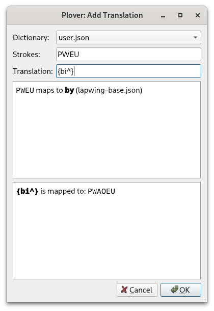
It is also very important that you don't add new outlines to lapwing-base.json. If you intend to update the Lapwing dictionary, you will have to replace this entire file which will throw away any edits you have made.
An example of a theory gap
We know that prefix strokes generally take precedence over word strokes when there is a conflict. However, sometimes there are more than just one conflicting entry. Here are some examples:
| Word/prefix | Outline |
|---|---|
| bi- | PWAOEU |
| buy | PWAO*EU |
| by | PWEU |
| bye | PW*EU |
| Word/prefix | Outline |
|---|---|
| di^ | TKAOEU or TKEU |
| die | TKAO*EU |
| dye | TK*EU |
| Word/prefix | Outline |
|---|---|
| tri^ | TRAOEU |
| try | TREU or TRAO*EU |
At the moment, I have not thought of a consistent way of resolving these conflicts. This is one area where you may want to move around some outlines or come up with your own.
How do I build speed?
Practice
You need lots and lots of practice. At this point, it's a good idea to try out sites that aren't steno-specific. Personally, I spent about an hour or two everyday on typing sites like TypeRacer and Monkeytype after I had learned basic theory. 3 months of practice later, and I was frequently hitting 150 WPM on short TypeRacer quotes. on Monkeytype, I was reaching 180 WPM on the 60 second test.
Using these sites are a great way of increasing your finger speed. If you would like to track exactly how fast your finger speed is, I would recommend using a metronome. You can use an app on your phone or a website on desktop. Start the metronome at a speed that you can handle (say, 30 BPM) and try writing some material either through a website (like any of the ones linked) or just writing into a text document.
You can then gradually increase the tempo of the metronome until you find your maximum stroke speed. For me, I find this to be where going any faster results in a drop in accuracy. Three to four strokes per second (180 to 240 BPM) is quite fast and adequate for most hobbyists, though professional stenographers often reach five.
Some people have also found listening to music and stroking on beat quite effective. If you're familiar with subdivision, you could get some effective practice even from slow songs.
Learning briefs
The other way of writing faster is by learning briefs. These abbreviated outlines are very nice because they allow you to increase your speed without having to move your fingers any quicker—you just have to be able to remember them! Obviously, it's impossible to learn a brief for every single word, so how do you decide when you want to learn a brief?
This is highly personal, but I think a good starting point is whenever you run into a word that is awkward to write. To me, this includes words that have long outlines requiring your fingers to move a lot.
Here are some of the briefs I used in the last paragraph:
| Translation | Brief | Mnemonic |
|---|---|---|
| personal | PERPBL | personal |
| I think | SWR-PBG | Uses Jeff's phrasing |
| whenever | WH-FR | The briefs of "when" + "ever" |
| you | U | |
| that is | THAS | |
| this | TH | |
| into | TPHAO | into |
| requiring | RAOEUR/-G | requiring |
| finger | TPEURPBG | -R folding |
| syllable | SEUBL | syllable |
Many of these might seem quite arbitrary, but that's only because the you have not learned some of the techniques yet! Also, the process of memorizing briefs is quite a lot easier than you might think. Compared to, say, learning vocabulary of another language, learning briefs is much easier.
How to learn briefs
The easiest way to learn briefs is just by looking them up with Plover's lookup tool. Whenever you feel like a word or phrase should be briefed, just look it up! Some people also like to learn briefs using Anki and plugins like plover-clippy-2.
Chapter 23: Phrase briefs
Basic phrase briefs
One word briefs like SKP, T, TPH, and -T can be quite useful especially as they can also be used in phrases.
Here is a non-exhaustive table of some common phrase briefs.
| Brief | Outline | Mnemonic |
|---|---|---|
| "is it" | ST | "is" + "it" |
| "is the" | S-T | "is" + "the" |
| "and the" | SKP-T | "and" + "the" |
| "and he" | SKPE | "and" + E |
| "and I" | SKPEU | "and" + EU |
| "and you" | SKPU | "and" + "you" |
| "at the" | TE | at the (this one is quite arbitrary) |
| "it is" | T-S | "it" + -S |
| "in the" | TPH-T | "in" + "the" |
Again, if you come across a phrase that you think could be briefed, try looking it up first. If an outline is not available, this is where you should add your own!
Lapwing doesn't contain many phrase briefs (compared to other theories), but this is because I recommend learning Jeff's phrasing. It is a very useful system that is already packaged in the plover-lapwing-aio plugin.
Jeff's phrasing
Jeff's phrasing system enables writing many common phrases, especially those that involve pronouns and verbs. For example, have a look at the following monkeytype quote:
They used to tell me I was building a dream, and so I followed the mob. When there was earth to plow or guns to bear, I was always there, right on the job. They used to tell me I was building a dream with peace and glory ahead. Why should I be standing in line just waiting for bread? Once I built a railroad, I made it run. Made it race against time. Once I built a railroad, now it's done. Brother, can you spare a dime?
Every bolded phrase can be written in one stroke using Jeff's phrasing. There are likely some that I have also missed, as I personally do not go beyond the basics of Jeff's phrasing.
Setup
Make sure you are using the plover-lapwing-aio plugin, or you have manually configured your dictionary stack by following these instructions.
Basics
Jeff's phrasing is a Magnum-esque phrasing system that allows you to write phrases involving pronouns and verbs.
In its most basic form, these are some phrases you can write:
- I go
- she does
- he wants
- they need
- we find
- it runs
Jeff's phrasing works by having pronoun chords on the left side, and verbs on the right side.
While this does mean that a lot of the chords are quite arbitrary (since you don't have vowels to work with), the speed boost you can achieve is well worth it. This is especially the case as Jeff's phrasing is quite extensive.
| Pronoun | Chord |
|---|---|
| I | SWR |
| she | SKWHR |
| he | KWHR |
| they | TWH |
| we | TWR |
| it | KPWH |
If you try these chords out on their own, you will find that they output the pronouns by themselves. However, these aren't particularly useful, so let's add in some right hand verbs.
| Verb | Chord |
|---|---|
| go | -G |
| find | -PBLG |
| want | -P |
| need | -RPG |
To write a phrase, you just have to combine a pronoun chord and a verb chord. Try some of phrases out!
SWR-RPGI needSKWHR-RPGshe needsTWH-Pthey wantKPWH-Pit wants
Notice how Jeff's phrasing automatically conjugates the verb by adding an ending "s" where appropriate.
If you want to see all of the possible verbs and ending chords, take a look at the documentation.
Past tense verbs
If you want to write a phrase like "I needed", you only need to add the -D key to indicate past tense.
SWR-RPGDI neededSKWHR-RPGDshe neededTWH-PDthey wantedKPWH-PDit wanted
Negation
If you want to negate a phrase, use the asterisk key. You can also combine this with the -D key.
SWR*RPGDI didn't needSKWHR*RPGshe doesn't needTWH*Pthey don't wantKPWH*PDit didn't want
Modifier words
You can add in some modifier words in addition to any of the other negation or tense features.
| Modifier word | Chord |
|---|---|
| can | A |
| shall | O |
| will | AO |
SWRORPGDI should needSKWHRAORPGshe will needTWHO*PDthey shouldn't wantKPWHOPit shall want
Advance usage
The documentation lists out a lot more features that I have not outlined in this page. I definitely recommend you keep it bookmarked if you want to learn this system. However, I myself have only learned what I have listed on this page plus a few more ending chords and I still find this system incredibly useful. If I get the time to learn the other features, I will update this page.
Chapter 24: Lapwing briefing techniques
This page is very incomplete.
Introduction
While the techniques listed in this page are utilized a lot in Lapwing theory, you may find some briefs missing from the default dictionary. In these cases, feel free to add them to your own personal dictionary.
It's also important to note that briefing techniques are often a lot more hairy than core theory principles you have learned so far, and thus you may run into conflicts with other words when trying to use these techniques. It's up to you to decide how to resolve these conflicts. Remember, at this point, you should be making your dictionary yours!
Dropping unstressed vowels
Identifying stress
In some words, there are vowels that are not stressed. In some cases, you can drop these vowels to cut down on the number of strokes needed to write this word.
Stress itself refers to emphasis in a syllable. Let's first go over a few examples and learn how to identify stress, or the lack of it. In the following words, try to think which syllable is emphasized the most:
- discipline
- foxtrot
- mention
- system
The easiest way that I find useful in identifying stress is just pronouncing the word with emphasis on different syllables. To emphasize a syllable, speak it a little louder than the others and say it a bit longer in length.
Let's take the first word; which of the following sounds the the most natural?
- discipline
- discipline
- discipline
Hopefully it should be clear that the first way sounds the most natural and therefore we can conclude that "discipline" has its stress on the first syllable. 2 and 3 should sound like you are putting the wrong emphasis on the wrong syllable.
You should also arrive at the conclusion that the other 3 words listed above have their stress on the first syllable. If you are ever unsure, you can always look up a word in a dictionary like Merriam Webster and find the IPA.
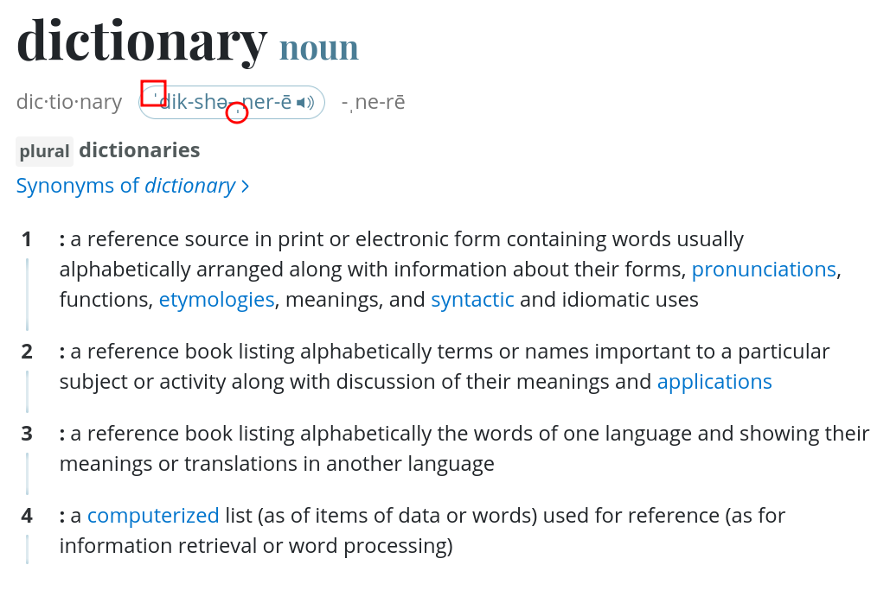
The boxed symbol denotes that the following syllable contains the primary stress and the circled symbol indicates that the next syllable has the secondary stress. Don't worry too much about primary vs secondary stress as later we will only be looking at unstressed syllables.
Stress isn't always on the first syllable, of course. Here are some words with their stressed syllables bolded:
- apostrophe
- begin
- gymnasium
- systemic
Unstressed vowels
Now that you've tried identifying stress, let's go over identifying unstressed vowels within a word. We will use the word "alcohol" in this example.
First try stressing each syllable:
- alcohol
- alcohol
- alcohol
1 sounds the most natural while 2 sounds the most unnatural. Therefore, we know for sure this is unstressed. Normally, if you were simply writing out this word, you would write AL/KO/HOL.
However, if we dropped the O in the second stroke (since that syllable is unstressed) we can actually save a stroke. Using the "-lk" compound cluster, we can instead write "alcohol" like A*LG/HOL (pronounced like "alkhol").
Even though we have dropped one of the vowels within this word, the resulting outline is still pronounced more or less like the actual word. This is whole idea of dropping unstressed vowels: we are omitting vowels that don't add much to the pronunciation of a word and shifting around the consonants to reduce the number of strokes.
Time to try it out yourself! Take a look at the following words and identify any unstressed vowels. See if you can save a stroke or two!
differ
Write-out: TKEU/TPER
Unstressed vowel(s) dropped: differ
The stress is on the first syllable and thus we can drop the "e". In the write-out, the "f" consonant is written using the left hand, but if we drop the "e", we can represent the "fr" cluster with -FR.
Brief: TKEUFR
demand
Write-out: TKE/PHAPBD
Unstressed vowel(s) dropped: demand
The stress is on the second syllable, so we can drop the "e". We can represent the "dm" cluster on the left hand with TKPH.
Brief: TKPHAPBD
geology
Write-out: SKWRAOE/KWRO/HRO/SKWREU
Unstressed vowel(s) dropped: geology
We can drop the second "o" and represent the "l" on the right hand.
Brief: SKWRAOE/KWROL/SKWREU
possible
Write-out: PO/SEUBL
Unstressed vowel(s) dropped: possible
The stress is on the first syllable, so we can drop the "i". We can represent the "s" consonant as -F.
Brief: POFBL
Caveats
Sometimes this technique doesn't work for a few reasons. First of all, the outline you end up with might already conflict with another valid word. Here are some examples:
PWOUTfor "about" or "bout"AEURDfor "arid" or "aired"
The other reason this technique won't always work is simply because there aren't enough consonants on the steno layout. For example, in the word "consonant", the (primary) stress is on the first syllable. However, if we were to drop every other vowel, we could not represent the resulting sound on the steno layout; there just aren't enough consonants to encode "consnnt" (without violating steno order). We can, however, write it in two strokes as KOPBS/TPHAPBT.
If you're brave,
KOFPBTcould be a valid outline!
Identifying unstressed vowels quickly
Instead of identifying the stressed vowels, you can also try identifying the unstressed vowel by testing what happens if you drop each vowel. You may find this technique more intuitive than the last one.
For example, take the word "carriage" and try dropping the first and second vowels separately:
- c
arriage - carr
iage
2 sounds more natural, and therefore we could write this word as KAEURPBLG.
Both these trial and error techniques work fairly well (at least for me), but they're not something you want to be using while stenoing—it is very slow. Instead, I encourage you to try it on words you encounter everyday.
By practising this a lot, it is possible to completely internalize this process and automatically identify unstressed vowels; this is exactly what you want to achieve and is what I primarily do.
Folding
Folding suffix keys was introduced in chapter 14, but there are also other keys you can fold into strokes. Unlike suffix keys, these are not handled automatically and are instead explicitly defined in the Lapwing dictionary.
E-folding
By inserting the E key into a vowel chord (called "folding"), you can add a "long e" /i/ vowel to the end of the stroke. This is typically only used for short vowel (A, O, and U) and is only valid if the resulting outline isn't already defined as a separate translation.
AE
This chord can be equivalent to ...A_/KWREU as in:
- happy
HAEP
KAEL
Equivalent outlines: KAL/KWREU or ...EU/KAL/KWREU.
- numerically
TPHAOU/PHER/KAEL - symbolically
SEUPL/PWOL/KAEL
AER
Equivalent outline: ...AEUR/KWREU
- carry
KAER
EBL
Equivalent outline: -BL/KWREU
- crumbly
KRUPL/EBL - humbly
HUPL/EBL
EFL
This stroke is equivalent to -FL/KWREU
- carefully
KAEUR/EFL - dreadfully
TKRED/EFL
L-folding
Folding -L can add the "-ly" suffix to the end of a word.
Examples:
- mostly
PHOEFLT - partly
PARLT - poorly
PAORL
T-folding
Folding -T can add the "-ity" or "-ty" clusters to the end of a word.
Examples:
- eternity
AOE/TERPBT - porosity
POR/KWROFT
Dropping other non-important sounds
asdf
Chapter 25: Symbols and modifiers
Basic punctuation and Plover commands were covered in chapter 19 but writing other symbols was not. Lapwing theory really only covers writing English prose, and so symbols is beyond its scope. However, instead of adding every symbol to your dictionary, there are preexisting ones that you can download and use. The same goes for writing keyboard shortcuts, also called "modifiers".
On this page, I've listed other dictionaries that I use for symbols and shortcuts. It's difficult to learn these by drilling them, so instead I recommend referring back to the documentation pages or the graphics made by @sammdot whenever you need to. Printing the graphics out and attaching them to your wall is also very handy.
Python dictionaries
Most dictionaries for writing symbols and modifiers use python dictionaries. In contrast to JSON or RTF dictionaries (which are essentially just lists of outlines and their translations), Python dictionaries generate their translations "on the fly". When an outline is received, the python dictionary parses each part of the outline and determines how to combine them all in one translation. This is useful for systematic dictionaries such as those for writing keyboard shortcuts and symbols.
Setup
Make sure you are using the plover-lapwing-aio plugin, or you have manually configured your dictionary stack by following these instructions.
Emily's symbols dictionary
This dictionary allows you to write any symbol available on a regular keyboard. In one stroke, you can control the spacing, repetition, and capitalization of the next word.
Usage
Emily's symbol dictionary uses a unique starting chord on the left SKWH. This chord does not represent a useful sound in English, so we can be sure any outline with this chord on the left hand side will not conflict with any preexisting words.
The right hand determines which symbol to write as well as the repetition. The left hand vowels control the spacing.

For example, to write !!!! (space on the right side and next word capitalized) you would use SKWHO*FRTS.
Breaking down this stroke looks like this:
SKWHleft hand starting chordOinsert space on the right*capitalize the next word-FRchord for the exclamation mark-TSrepeat 4 times
Emily's modifiers dictionary
This dictionary allows you to write any shortcut possible on a regular keyboard in one stroke.
Usage
Similar to her symbols dictionary, Emily's modifier dictionary uses a unique right hand ender chord: -LGTS. As this is a very rare chord, we can be sure that any outline including this chord does not conflict with any other words. The Ctrl, Shift, Alt, and Super (Windows) keys are pressed with the right index and middle finger and the letter or symbol is pressed with the left hand.

To write Ctrl+Shift+C you would write KR-FRLGTS.
Breaking down this stroke looks like this:
-LGTSright hand ending chord-FRchord for Ctrl and ShiftKRchord for C
NOTE: if you downloaded Emily's modifiers dictionary, you will find that the unique ending chord is actually
-LTZby default. It was changed to-LGTSin Lapwing. Keep this in mind if you seek out official documentation on the system.
Abby's left hand modifiers dictionary
This dictionary enables writing shortcuts with only one hand. Each shortcut is written using two strokes on the left.
Usage
To write Ctrl+V you would write KHR/SR.
Breaking down this outline looks like:
KHRchord for CtrlSRchord for V
See the readme for more details.
Learning these systems
I recommend keeping these graphics somewhere easily visible (such as on your wall or on your desktop wallpaper). Instead of drilling random strokes, I suggest just incorporating these systems into your steno computer usage and slowly learning them gradually. Abby's left hand modifiers dictionary is quite intuitive, and I would start there with simple shortcuts such as copying and pasting.
Chapter 26: Editing text
Lapwing contains some limited movement commands by default. However, if you want to switch to steno full time, you will have to incorporate another method for movement. This chapter goes over the default movement commands in lapwing-base.json as well as some additional methods you can use.
Movement
Basic movement
Here's a table of all basic movement commands:
| Outline | Description |
|---|---|
#TPH-R | Left arrow key 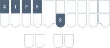 |
#TPH-P | Up arrow key  |
#TPH-B | Down arrow key 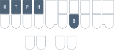 |
#TPH-G | Right arrow key 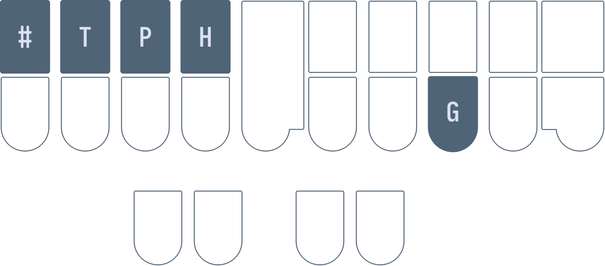 |
#TPH-FR | Home 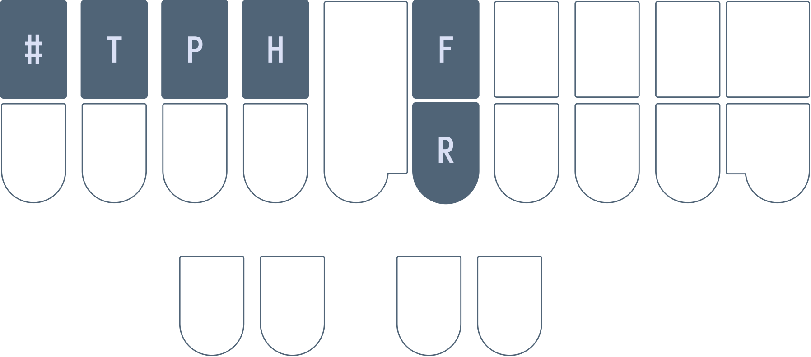 |
#TPH-LG | End  |
#TPH-FPL | Top (Ctrl+Home) 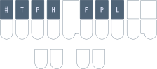 |
#TPH-RBG | Bottom (Ctrl+End) 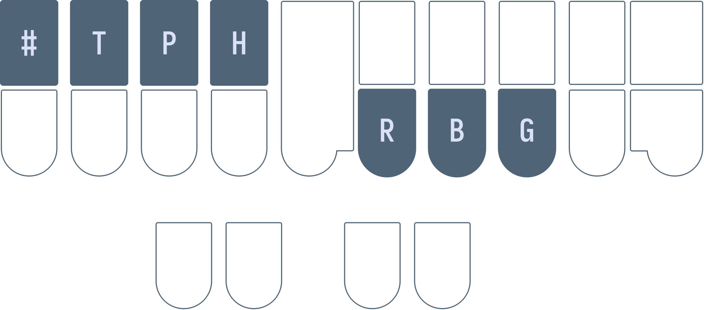 |
#TPH-RPG | Page up 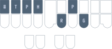 |
#TPH-FBL | Page down 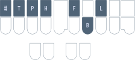 |
You can think of the -RPBG as an arrow key cluster and #TPH as a starting chord.
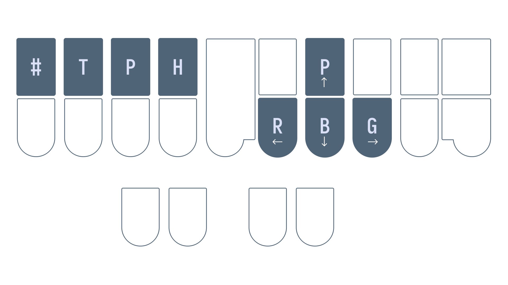
Moving word by word
You can normally move word by word by pressing Ctrl and an arrow key on a regular keyboard. Using Lapwing, you can do this with #TPH-RB and #TPH-BG.
| Outline | Description |
|---|---|
#TPH-RB | Left by one word 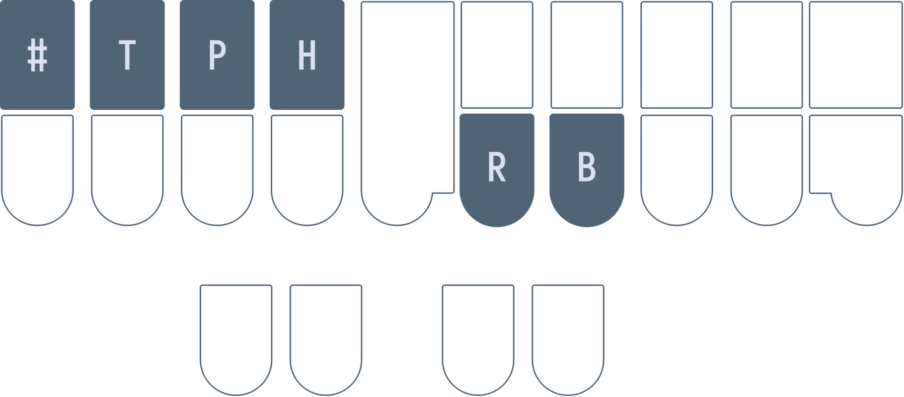 |
#TPH-BG | Right by one word 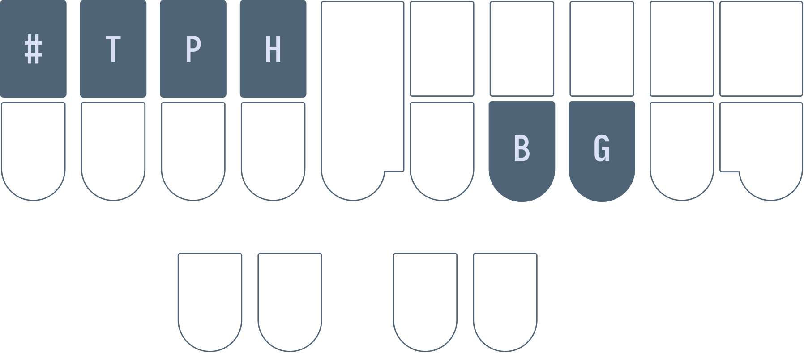 |
-TS repetition
You can repeat a movement key command up to 4 times in one stroke by including a combination of -T and -S.
| Repetition | Key |
|---|---|
| 1 | |
| 2 | -S |
| 3 | -T |
| 4 | -TS |
For example, #TPH-GT would move the cursor to the right by three characters and #TPH-BGT would move the cursor to the right by three words.
Selection
To select text, simply include the * key in a movement command. Repeating the same command works for incrementing your selection. For example, #TPH*R/#TPH*R/#TPH*R/#TPH*R will select the 4 letters to the left.
Repeat the last command
Instead of writing #TPH*R/#TPH*R/#TPH*R/#TPH*R, you can also use the number key to repeat the last outline: #TPH*R/#/#/#.
NOTE: this requires the
plover-last-translationplugin if you are not usingplover-lapwing-aio.
MacOS commands
Replace all occurrences of "Control" with "Alt" in the movement commands if you are on macOS.
Modal movement
Setup
Make sure you are using the plover-lapwing-aio plugin, or you have manually configured your dictionary stack by following these instructions.
Modal dictionaries
Moving around a document can be quite tedious especially with such a long starting chord like #TPH. One way to make movement easier is to use modal dictionaries. A modal dictionary is like a temporary dictionary that can be turned on and off with an outline in addition to outputting a translation.
With a modal movement dictionary, writing a regular movement stroke will turn the dictionary on. This dictionary contains the movement strokes but with the #TPH chord removed. This way, when you write a full stroke for the first movement command, you can write subsequent movement strokes using only the right hand. To turn off the modal dictionary, you would just right an outline that is not a movement command.

NOTE: this plugin is incompatible with some plugins such as plover-clippy. The creator has expressed that it is a bit of a hacky plugin.
Semi-modal movement
If you do not want to use modal dictionaries, you can also use the semi-modal movement dictionary. This also contains movement strokes without the left hand starting chord.
You can download the dictionary from the link above and make sure you add it to the top of your stack. Uncheck the box so that it is disabled by default. The idea is that you can enable this dictionary only when you need to move the text cursor.
To achieve this, you will need to add a toggling entry to one of your dictionaries:
{PLOVER:TOGGLE_DICT:!semi-modal-movement.json}

Now, whenever you want to move the text cursor without having to use a left hand starting chord, just write SKWR (or whatever stroke you chose) and then SKWR again when you're done.
First-up chord send and chord repeat
Quick video introducing these two firmware mods: https://youtu.be/UMGT-qyJeJk.
First-up chord send
Steno keyboards send stroke information to Plover once all keys have been released. You can test this out for yourself. Hold down S and press other keys on the steno layout. Plover will not receive any strokes as long as S (or any other key) is being held down. Once every key has been released, Plover will register the stroke.
Alternatively, you could have your keyboard send stroke information once the first key has been released. This is what "first-up chord send" refers to: stroke information is sent to Plover as soon as the first key has been released. This is very useful for repeating movement keys without using a separate dictionary or pressing the entire stroke each time.
By holding down the left hand starter chord, you can tap a right hand key repeatedly to move the cursor multiple times. In fact, as long as the left hand starter chord is being held, you can tap any of the right hand movement chords.

However, there are two caveats with this technique: firstly, it involves modifying your keyboard's firmware. Secondly, it may cause your accuracy to drop if you're writing fast. Personally, wrong strokes are very often detected by Plover when I try to use first-up chord send. It may be that my writing is sloppy and I am not too careful and deliberate about my stroke actions, but I have not been able to get used to this firmware mod.
Chord repeat
Chord repeat works a lot like holding down a key on a regular keyboard. However, as we often hold chords when we hesitate, it is more useful to double tap a chord and hold to signify that we want to repeat the chord.

This technique also requires modifying your keyboard's firmware. Unlike first-up chord send, I do recommend this and find it very useful.
Ecosteno, Multisteno, Splitography, Uni v3
For these keyboards, prebuilt firmware binaries for these mods are available at Josh Gram's steno-firmware repository.
Flashing these firmware files are beyond the scope of this page, and instructions differ from keyboard to keyboard and machine to machine. On Linux, flashing the Multisteno is relatively straightforward as long as dfu-util is installed. I use the following command (where noll_multisteno.bin is the binary):
sudo dfu-util -d 1eaf:0003 -a 2 -D "noll_multisteno.bin"
Javelin compatible devices
Javelin is a steno engine that is contained within a keyboard's firmware. This allows the keyboard to act a steno writer without having to install Plover on the host machine. It is very useful for using steno on multiple devices without having to worry about installing Plover or syncing dictionaries; the entirety of the translation from steno strokes to text happens on the keyboard itself.
Javelin is compatible with several steno keyboards such as the Uni v4 and the Polyglot. It is much easier to create custom firmware builds and flash binaries to these keyboards via the Javelin Steno Firmware Builder. By checking the "Show expert options" at the very top of the page, you have the option of enabling first up chord send and/or repeat.
If you don't intend to use Javelin's embedded steno capability, you can also still use Plover with keyboards that have Javelin firmware. For each keyboard, you will have to press a key combination to switch it into Gemini PR for usage with Plover.
Copying, pasting, and deleting text
Copying and pasting of text is done by simply emulating the Ctrl+C and Ctrl+V shortcuts. Using Abby's left hand modifiers, this would be KHR/KR and KHR/SR respectively. The same goes for cutting text.
The following table lists a few helpful strokes for deleting text. It is important to note that using these strokes will mess up any undo history with the *.
| Outline | Translation | Description |
|---|---|---|
PW-FP | {#BackSpace}{^} | Backspace |
PW*FP | {#Control(BackSpace)}{^} | Backspace the last word (change translation if you're on Mac) |
TKHR | {#Delete}{^} | Delete the next character |
TKHR* | {#Control(Delete)}{^} | Delete the next word |
If you have learned Plover theory and are considering switching to Lapwing, have a read through of this page before deciding!
Plover Theory
Plover theory is a perfectly capable theory. After all, Mirabai Knight, the founder of the Open Steno Project, uses it in her professional work as a stenocaptioner. She has graciously provided her own dictionary (main.json) for us hobbyists to use. As with all professional stenographers, she built the majority of this dictionary by herself, having added many of the entries over the years.
However, everyone writes differently. In fact, no two stenographers' dictionaries are ever the same. Many of the entries in main.json are simply what made sense to Mirabai at the time. They do not always follow systematic and rigorous rules. Plover theory itself is not very well defined in some areas; to illustrate this, have a look at all the ways to write "monotonous" in main.json:
"PHO/TPHOT/TPHOUS": "monotonous",
"PHOE/TPHOT/TPHOUS": "monotonous",
"PHOE/TPHOT/TPHUS": "monotonous",
"PHOPB/OT/TPHOUS": "monotonous",
"PHOPB/OT/TPHUS": "monotonous",
"PHOPB/TOPB/TPHUS": "monotonous",
"PHOPB/TPHOT/TPHOUS": "monotonous",
There are many different ways to write this word simply because there are no simple rules when it comes to splitting multisyllable words. This would be fine if the dictionary contained every single valid combination, but it doesn't. After all, it is a very time consuming task to add multiple entries for every single word. In the above example, PHOPB/TPHOT/TPHUS is missing.
The learning resources such as Learn Plover! and Art of Chording also do not mention any rules about doubling consonants between strokes or about using OUS vs US. While, I can advise against using US from having used main.json for a year, it is much harder for me to give a recommendation when it comes to doubling consonants in multisyllable words. It is just poorly defined, and the dictionary does not contain any easy to recognize patterns.
One more issue with main.json that is illustrated in the example above is the fact that many write-out entries require briefing techniques. In this case, you must drop the third "o" in "monotonous" since it is unstressed in order to write it out. This is fine for speed, but can be confusing for learners.
The common wisdom to work around these issues (if you would like to stick with Plover theory and main.json) is to simply just add entries to fill in these gaps. If you do not want to have to drop unstressed vowels, just add the entry yourself. If you disagree with the dictionary's preference towards OUS, it's trivial to add the alternative entries. After all, there is no such thing as a "complete" dictionary and stenographers constantly tweak their own.
However, I disagree with the notion that learners should be doing this right from the start. This is my motivation behind creating Lapwing theory. It is basically "Plover theory but more defined" in that there is always one outline that is correct for a given pronunciation.
I've also gone more into detail about my motivation behind creating Lapwing theory on my personal website.
Lapwing theory
I created the initial Lapwing dictionary in early 2022 and have been refining it since then. So far, it is in a more or less stable state; I only add miscellaneous entries that I come across in my daily computer usage, or remove bad entries that I discover.
You should not learn Lapwing theory if...
- ... you have your own rules to work around the inconsistencies of Plover.
- ... you have added well over a few hundred entries already.
- ... you brief quite heavily and have memorized many of those
main.json.- Lapwing does contain many briefs, but it is still missing quite a few briefs from
main.json
- Lapwing does contain many briefs, but it is still missing quite a few briefs from
- ... you prefer the openness of Plover theory and have adapted your dictionary to your writing style.
- ... you dislike the notion of having a single "correct" way to write out a word.
- ... you are looking for a theory that is not North American centric.
- Sadly, there are currently no freely available steno theories (that I know of) based on non-North American variants of English.
Using both main.json and lapwing-base.json
Some recommend using both main.json and lapwing-base.json in their dictionary stack. This is a great way to slowly teach yourself Lapwing without giving up all your progress on stock Plover. If you've memorized briefs in main.json that aren't in Lapwing, this is also a great way to address this issue should you wish to incorporate aspects of Lapwing theory.
However, compound words in main.json are quite haphazard, so some users recommend using a derivative of main.json with these removed. You can download this dictionary here. Just make sure to keep lapwing-base.json at a higher priority.
Differences
To switch to Lapwing theory from Plover theory, you do not necessarily need to work through every single chapter in Lapwing for Beginners. Below is a summary of the differences between Plover and Lapwing. The relevant chapters are also linked, and it is recommended you read these complete the exercises. You can assume anything not listed to be equivalent to Plover theory.
If you would still like to switch to Lapwing theory, I recommend reading through this entire section (and skimming the linked chapters) before finally deciding if trying it out is for you.
Top S number key
Lapwing theory uses the number key quite extensively for proper nouns (and sometimes as another disambiguator). The number bar on professional machines is in an inconvenient location. Furthermore, the finger you use differs depending on the other keys in the stroke. It is also not possible to include the number key in every single chord.
Thumb number keys (thumber keys) aren't much better either. It is impossible to write #AOEU, for example. Instead, Lapwing theory relocates the number key to the top S key on the left.
Please see chapter 5 to configure Plover to use this key.
KWR* for y
Use KWR* for the initial "y" consonant.
- yes
KWR*ES - yurt
KWR*URT
Please see chapter 6 for practice.
Note that this only applies to words that are spelled with a y. Words spelled without a y use no initial consonant chord.
- use
AOUS - utility
AOU/TEUL/TEU
TP* for ph
Use TP* for the initial "ph" consonant.
- phone
TPO*EPB - photo
TPO*E/TOE
WR for wr
Use WR for the initial "wr" consonant.
- wrap
WRAP - write
WRAOEUT
WH for wh
Use WH for the initial "wh-" consonant.
- when
WHEPB - white
WHAOEUT
Usage of AU
The AU vowel has the same sound as O as in "bot", but is used in words that are not spelled with a single o.
- bought
PWAUT - watt
WAUT
Please see chapter 8 for practice.
*PL for mp
Unlike Plover theory, Lapwing exclusively uses *PL for the ending "-mp" sound.
- bump
PW*UPL - lamp
HRA*PL
Please see chapter 9 for practice.
-PLT for ment
Use -PLT as a compound cluster for "-ment".
- garment
TKPWARPLT - torment
TORPLT
Please see chapter 11 for practice.
-LT for let
Use -LT as a compound cluster for "-let".
- starlet
STARLT - roulette
RAOULT
Please see chapter 11 for practice.
KR to resolve c conflicts
Use KR for the initial c consonant when there is a conflicting word.
- cent
KREPBT- As
SEPBTis already "sent"
- As
- cite
KRAOEUT- As
SAOEUTis already "sight"
- As
Basic words miscellaneous theory
Make sure to read chapter 12 for wrapping up basic words. It especially covers scenarios where you must write single syllable words with more than one stroke.
Prefixes and suffixes
Lapwing theory prioritizes prefix and suffix strokes for the most "obvious" outlines. For example, OUT is given to the {out^} prefix so you must use O*UT or AOUT to write the word "out".
Suffixes usually use KWR as a linker chord. This chord signifies that the stroke should attach to the previous word. For example, to write the word "flotation", you would write TPHROET/KWRAEUGS.
You should also only use prefixes and suffixes when it semantically makes sense. For example, you would not write the "er" in the word "coriander" using the {^er} suffix since "coriand" is not a root word that the suffix is modifying.
Make sure to read chapter 13 for more detail on how prefixes and suffixes work.
Here are some common prefix strokes that take precedence over words:
| Prefix/word | Prefix Outline | Recommended word outline(s) | Explanation |
|---|---|---|---|
| a | A | AEU | A* is already used. |
| bi^ (by) | PWAOEU | PWEU | There is a three way conflict between "by", "bye", and "buy". |
| be | PWE | -B | Useful in phrase briefs. |
| for | TPOR | TP-R or TPAURT | Useful in phrases like "for the" TP-RT. |
| in | EUPB | TPH | Useful in phrases like "in the" TPH-T. |
| or | OR | AOUR or AUR | O*R is already used. |
| out | OUT | O*UT or AOUT | Either works. |
| on | OPB | O*PB or AUPB | Either works. |
| tri^ (try) | TRAOEU | TRAO*EU or TREU | The first is the more "formal" outline, but the second matches the pattern with "by". |
Multistroke prefixes also take precedence over multistroke words (e.g., UPB/TKER is the prefix "under-") and in these cases the word variant is written by using the asterisk key in the second stroke.
Compound words
Compound words are written by including the asterisk in the first stroke of the second word.
- eyelash
AOEU/HRA*RB - grasshopper
TKPWRAS/HO*P/*ER
Please see chapter 14 for more details.
Syllabic splitting
Lapwing theory uses a strict method of splitting syllables. In short, every single stroke should start with a consonant (or KWR) and should not double the same consonant sound across two strokes.
- bunion
PWUPB/KWROPB - conscientious
KOPB/SHEU/KWREPB/-RBS - monotonous
PHO/TPHO/TO/TPHUS - shatter
SHA/TER - tomato
TO/PHAEU/TOE - violet
SRAOEU/KWROLT
This is one of Lapwing's key differences, so be sure to read chapter 15.
Right hand numberpad
Numbers are written one digit at a time using a right hand numberpad and the number key.
Please see chapter 17 for more details.
Proper nouns
Proper nouns are written by including the number key in the first stroke of the proper noun.
- Bob
#PWOB - Cameron
#KA/PHER/KWROPB
Miscellaneous theory principles
Be sure to read chapter 21.
How to get started
Setting up Lapwing
It is highly recommended that you use the plover-lapwing-aio plugin. This will automatically install the right plugins, dictionaries, and adds some other quality-of-life improvements such as relocating the number key for you and reverting the special number key behaviour. See chapter 5 for setting up Lapwing with this plugin.
However, if you already have several dictionaries with Plover theory, you can also just add the Lapwing dictionaries to your stack. All the Lapwing dictionaries are fully compatible with Plover without having to make any modifications. See appendix B for details.
Transitioning to Lapwing
Keep this page bookmarked and refer back to it whenever you run into trouble. Chapters 12, 13, 14, and 15 are especially important and I recommend at least skimming through these before you go "cold turkey" with Lapwing.
More tips to come...
Setting up Lapwing manually
This page describes how to manually configure Plover to use Lapwing theory. This is not a recommended method for two reasons: there is a lot of manual work required, and Plover will have a tendency to modify the number key entries, thereby making lookups difficult.
If any change is made directly to a Lapwing dictionary, Plover will change all entries with the number key so that they contain numbers in the steno strokes (i.e. #PWOB → 3W0B). To revert this, you will have to redownload the dictionary and update the dictionary in your stack. Therefore, I highly recommend simply the plover-lapwing-aio plugin instead of following the instructions on this page.
Install required plugins
See the Plover wiki page on installing plugins for instructions. Install the following plugins:
plover-dict-commandsplover-last-translationplover-modal-dictionaryplover-python-dictionaryplover-stitching
Note that you can install all four plugins before restarting Plover.
Download the dictionaries
Download the dictionaries by right clicking the following links and pressing Save link as (or whatever the equivalent is for your browser):
movement.modaljeff-phrasing.pyabby-left-hand-modifiers.pyemily-modifiers.pyemily-symbols.pylapwing-numbers.jsonlapwing-uk-additions.jsonlapwing-prefixed-proper-nouns.jsonlapwing-base.json
Next, in the Plover main window, click on the green plus button:

Select "Load dictionaries" and you will be greeted with a window to select all the dictionaries that you downloaded earlier. Next, click on main.json and press the red X button to delete it from your dictionary stack. Do the same for commands.json. You can now select each dictionary and make sure they are listed in your stack in the same order as above by using the blue arrow keys.

Relocate the number key
On professional steno machines, there is a long key that runs at the very top of the steno layout (called the number bar). It is in a somewhat awkward location, but for most mainstream steno theories, it doesn't matter; it is only used for writing numbers.

However, Lapwing theory uses the number key quite extensively (especially in proper nouns) and therefore puts it in a more convenient location. Lapwing removes one of the redundant S keys on the left and replaces it with the number key.

This key is not configured by default, so you will have to change it yourself. In the main window of Plover, go to Configure → Machine.
Scroll down to the keymap, and change either S1 or q to # depending on whether you are using Gemini PR or keyboard as the machine.

Triple click on the cell next to the key to open the dropdown. From there, you will be able to change the action to #.